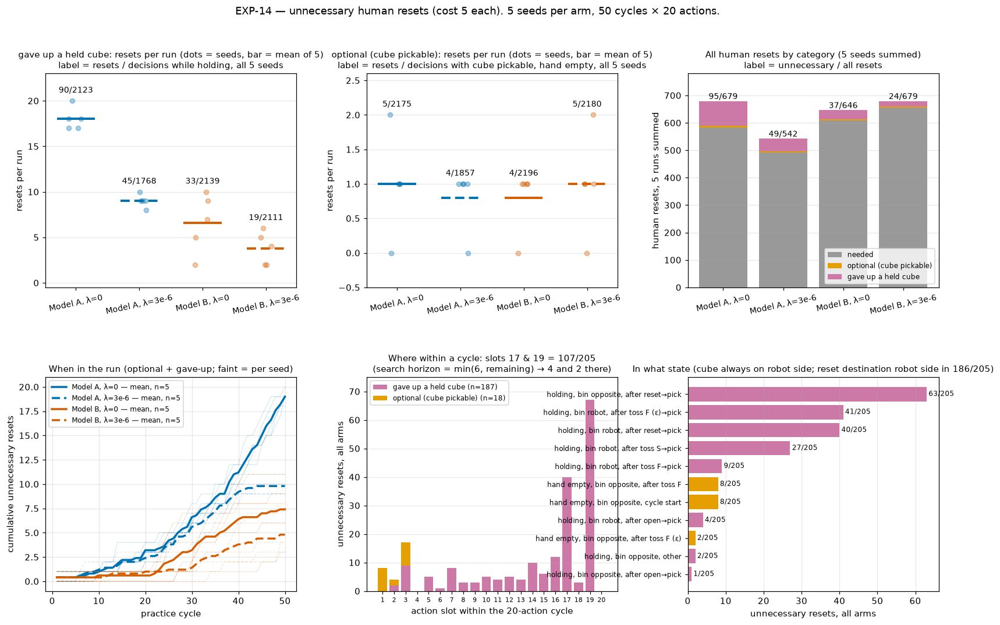
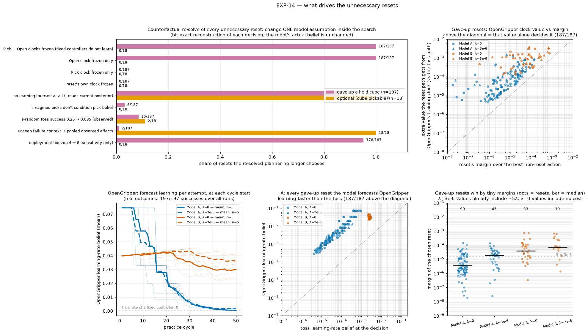

← Experiment log (committed copy). Committed snapshot of a live sub-page, taken 2026-09-27 10:45; files that were not committed are marked “not committed”.
Runs: EXP-14 (code f68a29dd), 4 arms × 5 seeds, 50 cycles × 20 actions, belief-space expectimax at depth min(6, remaining).
A reset is gave-up if a Toss was among the root options (the robot was holding the cube) and optional if a Pick was.
This is the same rule as the EXP-14 page. Scripts: hitl-pmp-scratch-plots-20260925/unnecessary-resets/.

Top row: counts per run (faint dots = seeds, bar = mean of 5). Labels are resets over the decisions at which that kind of reset was possible, summed over 5 seeds. Bottom row: cumulative count over the run (faint = seed), the action slot within the cycle, and the state and preceding actions.
A recurring pattern: 63/179 of all far-side resets (the needed ones after a successful toss included) are followed straight away by Pick and then a gave-up reset that brings the bin back to the robot side. That is two human resets in three actions. It accounts for the 63 gave-up resets labelled "holding, bin opposite, after reset→pick". In the planner's tree, the gain is the Pick and the OpenGripper attempt that the round trip creates.

Method. Every one of the 205 decisions was rebuilt offline: the logged belief (plus the one sampler training row recorded after it), atoms, failure-effect counts and model settings were fed to the pinned solver at f68a29dd. All 205 root value vectors match the logged ones exactly (max |Δ| = 0.0; the tolerance was 1e-9). A further 963 decisions of every kind (every 20th decision of each run) also match exactly (963/963). Each decision was then re-solved with one modelling assumption changed inside the search. The robot's actual belief is unchanged, so each re-solve is a single-decision counterfactual, not a closed-loop rerun.
| variant (one change) | gave-up flipped | flipped to | optional flipped | flipped to |
|---|---|---|---|---|
| fixed_clocks_frozen | 187/187 | {'MoveToTossLocationAndToss': 187} | 0/18 | {} |
| open_clock_frozen | 187/187 | {'MoveToTossLocationAndToss': 187} | 0/18 | {} |
| pick_clock_frozen | 0/187 | {} | 0/18 | {} |
| reset_clock_frozen | 0/187 | {} | 0/18 | {} |
| no_forecast | 161/187 | {'STOP': 92, 'MoveToTossLocationAndToss': 69} | 18/18 | {'PickCube': 9, 'STOP': 9} |
| no_pick_conditioning | 6/187 | {'MoveToTossLocationAndToss': 6} | 0/18 | {} |
| random_toss_observed | 16/187 | {'MoveToTossLocationAndToss': 16} | 2/18 | {'PickCube': 2} |
| pooled_failure_effects | 2/187 | {'MoveToTossLocationAndToss': 2} | 18/18 | {'PickCube': 18} |
| deployment_horizon_8 | 178/187 | {'MoveToTossLocationAndToss': 178} | 0/18 | {} |
"no learning forecast" flips many resets, but 92 of those flip to STOP: without any forecast nothing is worth practising, so it is a diagnostic, not a fix. Every gave-up reset's best alternative is Toss (187/187). In 187/187 of them, the extra value that OpenGripper's clock adds to the reset path (compared with the toss path) exceeds the reset's margin. OpenGripper's learning-rate belief is higher than the toss's at every gave-up reset (187/187). Real OpenGripper attempts total 91 / 49 / 36 / 21 over the 5 seeds of each arm, close to that arm's gave-up count (90 / 45 / 33 / 19). OpenGripper is practised almost only because of these resets.
Side effects of the top fix, measured on the 963 sampled decisions: freezing both fixed-controller clocks changes 1/847 non-reset choices and 7/116 reset choices (Reset→Reset: 2, Reset→Toss: 5, Pick→Reset: 1).
no_sampler). Since #370 their attempts advance a training clock
(SKILL_BELIEF_MODELS, PracticeExampleSource.OUTCOME). Model A's curve prior and Model B's drift η ≥ 0 then forecast
improvement from every attempt, and nothing in the data can cancel that forecast for a skill that is barely attempted. Model their
competence as stationary: uncertain, updated by success/failure, but not trending with practice. Keeping the information value
of observing them is fine; in the counterfactuals the information value alone never produced a gave-up reset.
EmpiricalFailureEffects uses exact-context maximum
likelihood, falling back to identity when a context is unseen. With 0–4 far-side observations per mode it is either blind (identity) or overconfident. A
hierarchical or partially pooled model (a context-specific estimate that shrinks towards the same skill's effects in related
contexts, with the posterior predictive used in search) would let the planner weigh far-side practice on what it has actually seen.
Not a fix: the deployment horizon (4 is what the evaluation uses) and λ. At λ=0 a reset is free in the objective. At λ=3e-6 it costs 5×3e-6 = 1.5e-5 in J, already included in those arms' values, and the resets still won. Among λ=0 gave-up resets, 69/90 (Model A) and 10/33 (Model B) have margins below 1.5e-5. These are statements about the objective, not suggestions to add a penalty.
Gave-up (sampled to span arms, seeds and cycles):
Each example shows the replayed video, the logged root values and branches, the beliefs, a plain-words explanation, the counterfactual re-solves, a static tree (root → every action; the chosen reset in amber and the best alternative in blue, with their chance branches and the next choice), and the full reconstructed tree to browse. The full tree was rebuilt offline and its root values equal the logged ones exactly for every example.
videos/global_curve-lam0-s0-c19-d0399.mp4]
Actions 15–20 of the cycle, replayed from the state log. The reset is outlined in amber, and the banner shows the logged root values.
| root action | value (logged) | chance branches: probability → successor value |
|---|---|---|
| Reset→bin robot side | 0.4639090 | p=1.000→0.4639090 |
| Reset→bin far side | 0.4639090 | p=1.000→0.4639090 |
| Toss | 0.4638703 | p=0.261→0.4722569; p=0.200→0.4547377; p=0.013→0.4547377; p=0.026→0.4547377; p=0.125→0.4638703; p=0.318→0.4638703; p=0.028→0.4638703; p=0.007→0.4638703; p=0.021→0.4638703 |
| STOP | 0.4636308 |
| belief at the decision | competence | learning rate | est. cost |
|---|---|---|---|
| Toss | 0.521 | 2.81e-04 | 1.00 |
| Pick | 0.978 | 2.52e-07 | 1.00 |
| OpenGripper | 0.551 | 3.28e-02 | 1.00 |
| Reset (human) | 0.973 | 2.50e-05 | 5.00 |
summed cost so far 30.00 · remaining actions 2 · search depth 2 · λ=0
What happened. The robot had just picked the cube (action 19 of 20, bin on the robot side), so it was holding it. 2 actions were left, so the search looked 2 steps ahead. Tossing now was worth 0.4638703; asking the human for a reset was worth 0.4639090, which is 3.9e-05 more. That margin is tiny. At λ=0 the objective contains no cost term at all, so the reset's human cost (5) is invisible to the planner.
Why the reset scored higher. When the robot is holding the cube, a reset leaves its gripper closed and empty, so in the planner's own tree the next action after the reset is OpenGripper. OpenGripper is a fixed controller: it has no parameters and it succeeded in 197 of 197 real attempts. The belief model still gives it a training clock, and it forecasts that each attempt raises its competence by about 3.3e-02. For the toss it forecasts 2.8e-04 per example. The objective J scores deployment, and deployment needs OpenGripper to recover from a failed pick, so J rises with OpenGripper competence. OpenGripper's belief is still low (0.551) because the skill is almost never practised, which makes each imagined attempt look useful. Along the reset path, the value of OpenGripper's clock is 2.8e-04 greater than along the toss path. That exceeds the margin, so this clock is what decides the choice.
Check. If only OpenGripper's clock is frozen inside the search, the same belief gives Toss 0.4638703 and Reset 0.4636308, so the planner tosses. The reset is still chosen after freezing Pick's clock, freezing the reset's own clock, using the observed ε-random toss rate, pooling unseen failure contexts. See the table.
| variant | choice | Reset→bin robot side | Toss |
|---|---|---|---|
| OpenGripper clock frozen | Toss | 0.4636308 | 0.4638703 |
| Pick clock frozen | Reset→bin robot side | 0.4639090 | 0.4638703 |
| Pick + OpenGripper clocks frozen | Toss | 0.4636308 | 0.4638703 |
| reset's own clock frozen | Reset→bin robot side | 0.4639090 | 0.4638703 |
| ε-random toss success 0.085 | Reset→bin robot side | 0.4639090 | 0.4638703 |
| unseen failure contexts pooled | Reset→bin robot side | 0.4639090 | 0.4638703 |
| no learning forecast | Toss | 0.5159617 | 0.5159617 |
| deployment horizon 8 | Toss | 0.4677468 | 0.4678426 |
[img not committed: trees/global_curve-lam0-s0-c19-d0399.png]
videos/global_curve-lam0-s4-c32-d0654.mp4]
Actions 10–18 of the cycle, replayed from the state log. The reset is outlined in amber, and the banner shows the logged root values.
| root action | value (logged) | chance branches: probability → successor value |
|---|---|---|
| Reset→bin robot side | 0.6941483 | p=1.000→0.6941483 |
| Toss | 0.6941258 | p=0.357→0.6969269; p=0.143→0.6870741; p=0.125→0.6941179; p=0.125→0.6941179; p=0.250→0.6941497 |
| Reset→bin far side | 0.6941203 | p=1.000→0.6941203 |
| STOP | 0.6939645 |
| belief at the decision | competence | learning rate | est. cost |
|---|---|---|---|
| Toss | 0.715 | 6.17e-05 | 1.00 |
| Pick | 0.979 | 4.73e-08 | 1.00 |
| OpenGripper | 0.809 | 5.85e-03 | 1.00 |
| Reset (human) | 0.976 | 2.42e-06 | 5.00 |
summed cost so far 17.00 · remaining actions 7 · search depth 6 · λ=0
What happened. The robot had just picked the cube (action 14 of 20, bin on the far side), so it was holding it. 7 actions were left, so the search looked 6 steps ahead. Tossing now was worth 0.6941258; asking the human for a reset was worth 0.6941483, which is 2.2e-05 more. That margin is tiny. At λ=0 the objective contains no cost term at all, so the reset's human cost (5) is invisible to the planner.
Why the reset scored higher. When the robot is holding the cube, a reset leaves its gripper closed and empty, so in the planner's own tree the next action after the reset is OpenGripper. OpenGripper is a fixed controller: it has no parameters and it succeeded in 197 of 197 real attempts. The belief model still gives it a training clock, and it forecasts that each attempt raises its competence by about 5.9e-03. For the toss it forecasts 6.2e-05 per example. The objective J scores deployment, and deployment needs OpenGripper to recover from a failed pick, so J rises with OpenGripper competence. OpenGripper's belief is still low (0.809) because the skill is almost never practised, which makes each imagined attempt look useful. Along the reset path, the value of OpenGripper's clock is 8.6e-05 greater than along the toss path. That exceeds the margin, so this clock is what decides the choice.
Check. If only OpenGripper's clock is frozen inside the search, the same belief gives Toss 0.6941188 and Reset 0.6940552, so the planner tosses. The reset is still chosen after freezing Pick's clock, freezing the reset's own clock, using the observed ε-random toss rate, pooling unseen failure contexts. See the table.
| variant | choice | Reset→bin robot side | Toss |
|---|---|---|---|
| OpenGripper clock frozen | Toss | 0.6940552 | 0.6941188 |
| Pick clock frozen | Reset→bin robot side | 0.6941483 | 0.6941258 |
| Pick + OpenGripper clocks frozen | Toss | 0.6940552 | 0.6941188 |
| reset's own clock frozen | Reset→bin robot side | 0.6941483 | 0.6941258 |
| ε-random toss success 0.085 | Reset→bin robot side | 0.6941479 | 0.6941273 |
| unseen failure contexts pooled | Reset→bin robot side | 0.6941483 | 0.6941257 |
| no learning forecast | Toss | 0.7117261 | 0.7117261 |
| deployment horizon 8 | Toss | 0.6970843 | 0.6971368 |
[img not committed: trees/global_curve-lam0-s4-c32-d0654.png]
videos/global_curve-lam0-s1-c40-d0814.mp4]
Actions 10–18 of the cycle, replayed from the state log. The reset is outlined in amber, and the banner shows the logged root values.
| root action | value (logged) | chance branches: probability → successor value |
|---|---|---|
| Reset→bin robot side | 0.7408377 | p=1.000→0.7408377 |
| Toss | 0.7408376 | p=0.403→0.7429059; p=0.079→0.7322008; p=0.017→0.7321887; p=0.125→0.7408391; p=0.350→0.7408372; p=0.017→0.7408248; p=0.005→0.7408248; p=0.002→0.7408248 |
| Reset→bin far side | 0.7408324 | p=1.000→0.7408324 |
| STOP | 0.7407838 |
| belief at the decision | competence | learning rate | est. cost |
|---|---|---|---|
| Toss | 0.807 | 1.63e-05 | 1.00 |
| Pick | 0.963 | 1.42e-08 | 1.00 |
| OpenGripper | 0.915 | 9.26e-04 | 1.00 |
| Reset (human) | 0.977 | 1.59e-06 | 5.00 |
summed cost so far 21.00 · remaining actions 7 · search depth 6 · λ=0
What happened. The robot had just picked the cube (action 14 of 20, bin on the robot side), so it was holding it. 7 actions were left, so the search looked 6 steps ahead. Tossing now was worth 0.7408376; asking the human for a reset was worth 0.7408377, which is 1.0e-07 more. That margin is tiny. At λ=0 the objective contains no cost term at all, so the reset's human cost (5) is invisible to the planner.
Why the reset scored higher. When the robot is holding the cube, a reset leaves its gripper closed and empty, so in the planner's own tree the next action after the reset is OpenGripper. OpenGripper is a fixed controller: it has no parameters and it succeeded in 197 of 197 real attempts. The belief model still gives it a training clock, and it forecasts that each attempt raises its competence by about 9.3e-04. For the toss it forecasts 1.6e-05 per example. The objective J scores deployment, and deployment needs OpenGripper to recover from a failed pick, so J rises with OpenGripper competence. OpenGripper's belief is still low (0.915) because the skill is almost never practised, which makes each imagined attempt look useful. Along the reset path, the value of OpenGripper's clock is 2.3e-05 greater than along the toss path. That exceeds the margin, so this clock is what decides the choice.
Check. If only OpenGripper's clock is frozen inside the search, the same belief gives Toss 0.7408322 and Reset 0.7408097, so the planner tosses. The reset is still chosen after freezing Pick's clock, freezing the reset's own clock, pooling unseen failure contexts. The planner also tosses after using the observed ε-random toss rate. See the table.
| variant | choice | Reset→bin robot side | Toss |
|---|---|---|---|
| OpenGripper clock frozen | Toss | 0.7408097 | 0.7408322 |
| Pick clock frozen | Reset→bin robot side | 0.7408377 | 0.7408376 |
| Pick + OpenGripper clocks frozen | Toss | 0.7408097 | 0.7408322 |
| reset's own clock frozen | Reset→bin robot side | 0.7408377 | 0.7408376 |
| ε-random toss success 0.085 | Toss | 0.7408376 | 0.7408379 |
| unseen failure contexts pooled | Reset→bin robot side | 0.7408377 | 0.7408367 |
| no learning forecast | Toss | 0.8026543 | 0.8026543 |
| deployment horizon 8 | Toss | 0.7458431 | 0.7458641 |
[img not committed: trees/global_curve-lam0-s1-c40-d0814.png]
videos/global_curve-lam0-s2-c48-d0978.mp4]
Actions 15–20 of the cycle, replayed from the state log. The reset is outlined in amber, and the banner shows the logged root values.
| root action | value (logged) | chance branches: probability → successor value |
|---|---|---|
| Reset→bin robot side | 0.8824729 | p=1.000→0.8824729 |
| Reset→bin far side | 0.8824729 | p=1.000→0.8824729 |
| Toss | 0.8824719 | p=0.448→0.8828527; p=0.052→0.8791802; p=0.125→0.8824719; p=0.188→0.8824719; p=0.188→0.8824719 |
| STOP | 0.8824673 |
| belief at the decision | competence | learning rate | est. cost |
|---|---|---|---|
| Toss | 0.896 | 5.97e-06 | 1.00 |
| Pick | 0.979 | 1.93e-09 | 1.00 |
| OpenGripper | 0.941 | 3.90e-04 | 1.00 |
| Reset (human) | 0.978 | 4.82e-07 | 5.00 |
summed cost so far 30.00 · remaining actions 2 · search depth 2 · λ=0
What happened. The robot had just picked the cube (action 19 of 20, bin on the far side), so it was holding it. 2 actions were left, so the search looked 2 steps ahead. Tossing now was worth 0.8824719; asking the human for a reset was worth 0.8824729, which is 1.0e-06 more. That margin is tiny. At λ=0 the objective contains no cost term at all, so the reset's human cost (5) is invisible to the planner.
Why the reset scored higher. When the robot is holding the cube, a reset leaves its gripper closed and empty, so in the planner's own tree the next action after the reset is OpenGripper. OpenGripper is a fixed controller: it has no parameters and it succeeded in 197 of 197 real attempts. The belief model still gives it a training clock, and it forecasts that each attempt raises its competence by about 3.9e-04. For the toss it forecasts 6.0e-06 per example. The objective J scores deployment, and deployment needs OpenGripper to recover from a failed pick, so J rises with OpenGripper competence. OpenGripper's belief is still low (0.941) because the skill is almost never practised, which makes each imagined attempt look useful. Along the reset path, the value of OpenGripper's clock is 5.7e-06 greater than along the toss path. That exceeds the margin, so this clock is what decides the choice.
Check. If only OpenGripper's clock is frozen inside the search, the same belief gives Toss 0.8824719 and Reset 0.8824673, so the planner tosses. The reset is still chosen after freezing Pick's clock, freezing the reset's own clock, using the observed ε-random toss rate, pooling unseen failure contexts. See the table.
| variant | choice | Reset→bin robot side | Toss |
|---|---|---|---|
| OpenGripper clock frozen | Toss | 0.8824673 | 0.8824719 |
| Pick clock frozen | Reset→bin robot side | 0.8824729 | 0.8824719 |
| Pick + OpenGripper clocks frozen | Toss | 0.8824673 | 0.8824719 |
| reset's own clock frozen | Reset→bin robot side | 0.8824729 | 0.8824719 |
| ε-random toss success 0.085 | Reset→bin robot side | 0.8824729 | 0.8824719 |
| unseen failure contexts pooled | Reset→bin robot side | 0.8824729 | 0.8824719 |
| no learning forecast | Toss | 0.8948213 | 0.8948213 |
| deployment horizon 8 | Toss | 0.8839727 | 0.8839773 |
[img not committed: trees/global_curve-lam0-s2-c48-d0978.png]
videos/global_curve-lam3e-6-s3-c19-d0398.mp4]
Actions 15–20 of the cycle, replayed from the state log. The reset is outlined in amber, and the banner shows the logged root values.
| root action | value (logged) | chance branches: probability → successor value |
|---|---|---|
| Reset→bin robot side | 0.7013923 | p=1.000→0.7013923 |
| Reset→bin far side | 0.7013923 | p=1.000→0.7013923 |
| Toss | 0.7013333 | p=0.363→0.7076596; p=0.115→0.6845720; p=0.019→0.6845720; p=0.003→0.6845720; p=0.125→0.7013333; p=0.345→0.7013333; p=0.024→0.7013333; p=0.006→0.7013333 |
| STOP | 0.7009017 |
| belief at the decision | competence | learning rate | est. cost |
|---|---|---|---|
| Toss | 0.726 | 5.12e-04 | 1.00 |
| Pick | 0.975 | 7.07e-06 | 1.00 |
| OpenGripper | 0.551 | 3.28e-02 | 0.99 |
| Reset (human) | 0.973 | 2.59e-05 | 5.00 |
summed cost so far 30.00 · remaining actions 2 · search depth 2 · λ=3e-06
What happened. The robot had just picked the cube (action 19 of 20, bin on the robot side), so it was holding it. 2 actions were left, so the search looked 2 steps ahead. Tossing now was worth 0.7013333; asking the human for a reset was worth 0.7013923, which is 5.9e-05 more. That margin is tiny. At λ=3e-06 the reset's cost enters as −λ×5.00 = −1.5e-05, already inside these values.
Why the reset scored higher. When the robot is holding the cube, a reset leaves its gripper closed and empty, so in the planner's own tree the next action after the reset is OpenGripper. OpenGripper is a fixed controller: it has no parameters and it succeeded in 197 of 197 real attempts. The belief model still gives it a training clock, and it forecasts that each attempt raises its competence by about 3.3e-02. For the toss it forecasts 5.1e-04 per example. The objective J scores deployment, and deployment needs OpenGripper to recover from a failed pick, so J rises with OpenGripper competence. OpenGripper's belief is still low (0.551) because the skill is almost never practised, which makes each imagined attempt look useful. Along the reset path, the value of OpenGripper's clock is 5.1e-04 greater than along the toss path. That exceeds the margin, so this clock is what decides the choice.
Check. If only OpenGripper's clock is frozen inside the search, the same belief gives Toss 0.7013333 and Reset 0.7008867, so the planner tosses. The reset is still chosen after freezing Pick's clock, freezing the reset's own clock, using the observed ε-random toss rate, pooling unseen failure contexts. See the table.
| variant | choice | Reset→bin robot side | Toss |
|---|---|---|---|
| OpenGripper clock frozen | Toss | 0.7008867 | 0.7013333 |
| Pick clock frozen | Reset→bin robot side | 0.7013923 | 0.7013333 |
| Pick + OpenGripper clocks frozen | Toss | 0.7008867 | 0.7013333 |
| reset's own clock frozen | Reset→bin robot side | 0.7013923 | 0.7013333 |
| ε-random toss success 0.085 | Reset→bin robot side | 0.7013923 | 0.7013333 |
| unseen failure contexts pooled | Reset→bin robot side | 0.7013923 | 0.7013333 |
| no learning forecast | STOP | 0.7172540 | 0.7172660 |
| deployment horizon 8 | Toss | 0.7086438 | 0.7088209 |
[img not committed: trees/global_curve-lam3e-6-s3-c19-d0398.png]
videos/global_curve-lam3e-6-s2-c29-d0582.mp4]
Actions 1–7 of the cycle, replayed from the state log. The reset is outlined in amber, and the banner shows the logged root values.
| root action | value (logged) | chance branches: probability → successor value |
|---|---|---|
| Reset→bin robot side | 0.8276415 | p=1.000→0.8276415 |
| Toss | 0.8276026 | p=0.416→0.8303225; p=0.084→0.8140898; p=0.125→0.8275935; p=0.188→0.8276422; p=0.188→0.8275935 |
| Reset→bin far side | 0.8275895 | p=1.000→0.8275895 |
| STOP | 0.8273403 |
| belief at the decision | competence | learning rate | est. cost |
|---|---|---|---|
| Toss | 0.832 | 1.01e-04 | 1.00 |
| Pick | 0.978 | 5.33e-08 | 1.00 |
| OpenGripper | 0.773 | 8.45e-03 | 1.00 |
| Reset (human) | 0.976 | 4.13e-06 | 5.00 |
summed cost so far 6.00 · remaining actions 18 · search depth 6 · λ=3e-06
What happened. The robot had just picked the cube (action 3 of 20, bin on the far side), so it was holding it. 18 actions were left, so the search looked 6 steps ahead. Tossing now was worth 0.8276026; asking the human for a reset was worth 0.8276415, which is 3.9e-05 more. That margin is tiny. At λ=3e-06 the reset's cost enters as −λ×5.00 = −1.5e-05, already inside these values.
Why the reset scored higher. When the robot is holding the cube, a reset leaves its gripper closed and empty, so in the planner's own tree the next action after the reset is OpenGripper. OpenGripper is a fixed controller: it has no parameters and it succeeded in 197 of 197 real attempts. The belief model still gives it a training clock, and it forecasts that each attempt raises its competence by about 8.4e-03. For the toss it forecasts 1.0e-04 per example. The objective J scores deployment, and deployment needs OpenGripper to recover from a failed pick, so J rises with OpenGripper competence. OpenGripper's belief is still low (0.773) because the skill is almost never practised, which makes each imagined attempt look useful. Along the reset path, the value of OpenGripper's clock is 1.6e-04 greater than along the toss path. That exceeds the margin, so this clock is what decides the choice.
Check. If only OpenGripper's clock is frozen inside the search, the same belief gives Toss 0.8275947 and Reset 0.8274747, so the planner tosses. The reset is still chosen after freezing Pick's clock, freezing the reset's own clock, using the observed ε-random toss rate, pooling unseen failure contexts. See the table.
| variant | choice | Reset→bin robot side | Toss |
|---|---|---|---|
| OpenGripper clock frozen | Toss | 0.8274747 | 0.8275947 |
| Pick clock frozen | Reset→bin robot side | 0.8276415 | 0.8276026 |
| Pick + OpenGripper clocks frozen | Toss | 0.8274747 | 0.8275947 |
| reset's own clock frozen | Reset→bin robot side | 0.8276415 | 0.8276026 |
| ε-random toss success 0.085 | Reset→bin robot side | 0.8276412 | 0.8276044 |
| unseen failure contexts pooled | Reset→bin robot side | 0.8276415 | 0.8276024 |
| no learning forecast | STOP | 0.8273530 | 0.8273650 |
| deployment horizon 8 | Toss | 0.8317344 | 0.8318271 |
[img not committed: trees/global_curve-lam3e-6-s2-c29-d0582.png]
videos/global_curve-lam3e-6-s0-c43-d0865.mp4]
Actions 6–14 of the cycle, replayed from the state log. The reset is outlined in amber, and the banner shows the logged root values.
| root action | value (logged) | chance branches: probability → successor value |
|---|---|---|
| Reset→bin robot side | 0.8052742 | p=1.000→0.8052742 |
| Toss | 0.8052739 | p=0.410→0.8072998; p=0.070→0.7961163; p=0.008→0.7960946; p=0.013→0.7960946; p=0.125→0.8052763; p=0.338→0.8052740; p=0.014→0.8052519; p=0.023→0.8052519 |
| Reset→bin far side | 0.8052673 | p=1.000→0.8052673 |
| STOP | 0.8052377 |
| belief at the decision | competence | learning rate | est. cost |
|---|---|---|---|
| Toss | 0.819 | 1.74e-05 | 1.00 |
| Pick | 0.961 | 1.26e-08 | 1.00 |
| OpenGripper | 0.908 | 1.15e-03 | 1.00 |
| Reset (human) | 0.978 | 7.74e-07 | 5.00 |
summed cost so far 9.00 · remaining actions 11 · search depth 6 · λ=3e-06
What happened. The robot had just picked the cube (action 10 of 20, bin on the robot side), so it was holding it. 11 actions were left, so the search looked 6 steps ahead. Tossing now was worth 0.8052739; asking the human for a reset was worth 0.8052742, which is 3.5e-07 more. That margin is tiny. At λ=3e-06 the reset's cost enters as −λ×5.00 = −1.5e-05, already inside these values.
Why the reset scored higher. When the robot is holding the cube, a reset leaves its gripper closed and empty, so in the planner's own tree the next action after the reset is OpenGripper. OpenGripper is a fixed controller: it has no parameters and it succeeded in 197 of 197 real attempts. The belief model still gives it a training clock, and it forecasts that each attempt raises its competence by about 1.2e-03. For the toss it forecasts 1.7e-05 per example. The objective J scores deployment, and deployment needs OpenGripper to recover from a failed pick, so J rises with OpenGripper competence. OpenGripper's belief is still low (0.908) because the skill is almost never practised, which makes each imagined attempt look useful. Along the reset path, the value of OpenGripper's clock is 3.6e-05 greater than along the toss path. That exceeds the margin, so this clock is what decides the choice.
Check. If only OpenGripper's clock is frozen inside the search, the same belief gives Toss 0.8052718 and Reset 0.8052358, so the planner tosses. The reset is still chosen after freezing Pick's clock, freezing the reset's own clock, pooling unseen failure contexts. The planner also tosses after using the observed ε-random toss rate. See the table.
| variant | choice | Reset→bin robot side | Toss |
|---|---|---|---|
| OpenGripper clock frozen | Toss | 0.8052358 | 0.8052718 |
| Pick clock frozen | Reset→bin robot side | 0.8052742 | 0.8052739 |
| Pick + OpenGripper clocks frozen | Toss | 0.8052358 | 0.8052718 |
| reset's own clock frozen | Reset→bin robot side | 0.8052742 | 0.8052739 |
| ε-random toss success 0.085 | Toss | 0.8052742 | 0.8052743 |
| unseen failure contexts pooled | Reset→bin robot side | 0.8052742 | 0.8052726 |
| no learning forecast | STOP | 0.8142213 | 0.8142333 |
| deployment horizon 8 | Toss | 0.8110328 | 0.8110666 |
[img not committed: trees/global_curve-lam3e-6-s0-c43-d0865.png]
videos/local_trend-lam0-s4-c23-d0476.mp4]
Actions 12–20 of the cycle, replayed from the state log. The reset is outlined in amber, and the banner shows the logged root values.
| root action | value (logged) | chance branches: probability → successor value |
|---|---|---|
| Reset→bin far side | 0.9138442 | p=1.000→0.9138442 |
| Reset→bin robot side | 0.9137888 | p=1.000→0.9137888 |
| Toss | 0.9130863 | p=0.464→0.9191069; p=0.036→0.8331210; p=0.125→0.9129420; p=0.125→0.9129420; p=0.250→0.9135187 |
| STOP | 0.9101538 |
| belief at the decision | competence | learning rate | est. cost |
|---|---|---|---|
| Toss | 0.928 | 2.38e-03 | 1.00 |
| Pick | 0.919 | 1.67e-03 | 1.00 |
| OpenGripper | 0.785 | 3.96e-02 | 0.99 |
| Reset (human) | 0.981 | 4.69e-03 | 5.00 |
summed cost so far 27.00 · remaining actions 5 · search depth 5 · λ=0
What happened. The robot had just picked the cube (action 16 of 20, bin on the far side), so it was holding it. 5 actions were left, so the search looked 5 steps ahead. Tossing now was worth 0.9130863; asking the human for a reset was worth 0.9138442, which is 7.6e-04 more. That margin is tiny. At λ=0 the objective contains no cost term at all, so the reset's human cost (5) is invisible to the planner.
Why the reset scored higher. When the robot is holding the cube, a reset leaves its gripper closed and empty, so in the planner's own tree the next action after the reset is OpenGripper. OpenGripper is a fixed controller: it has no parameters and it succeeded in 197 of 197 real attempts. The belief model still gives it a training clock, and it forecasts that each attempt raises its competence by about 4.0e-02. For the toss it forecasts 2.4e-03 per example. The objective J scores deployment, and deployment needs OpenGripper to recover from a failed pick, so J rises with OpenGripper competence. OpenGripper's belief is still low (0.785) because the skill is almost never practised, which makes each imagined attempt look useful. Along the reset path, the value of OpenGripper's clock is 1.8e-03 greater than along the toss path. That exceeds the margin, so this clock is what decides the choice.
Check. If only OpenGripper's clock is frozen inside the search, the same belief gives Toss 0.9122388 and Reset 0.9112023, so the planner tosses. The reset is still chosen after freezing Pick's clock, freezing the reset's own clock, using the observed ε-random toss rate, pooling unseen failure contexts. See the table.
| variant | choice | Reset→bin far side | Toss |
|---|---|---|---|
| OpenGripper clock frozen | Toss | 0.9112023 | 0.9122388 |
| Pick clock frozen | Reset→bin far side | 0.9136607 | 0.9128379 |
| Pick + OpenGripper clocks frozen | Toss | 0.9109539 | 0.9118802 |
| reset's own clock frozen | Reset→bin far side | 0.9138442 | 0.9130863 |
| ε-random toss success 0.085 | Reset→bin far side | 0.9138442 | 0.9131182 |
| unseen failure contexts pooled | Reset→bin robot side | 0.9137888 | 0.9130188 |
| no learning forecast | Reset→bin robot side | 0.9062872 | 0.9062872 |
| deployment horizon 8 | Toss | 0.9297931 | 0.9301858 |
[img not committed: trees/local_trend-lam0-s4-c23-d0476.png]
videos/local_trend-lam0-s3-c29-d0587.mp4]
Actions 3–11 of the cycle, replayed from the state log. The reset is outlined in amber, and the banner shows the logged root values.
| root action | value (logged) | chance branches: probability → successor value |
|---|---|---|
| Reset→bin robot side | 0.8549010 | p=1.000→0.8549010 |
| Toss | 0.8548190 | p=0.435→0.8676056; p=0.049→0.7694970; p=0.014→0.7688507; p=0.002→0.7688507; p=0.125→0.8550147; p=0.356→0.8547109; p=0.011→0.8538546; p=0.007→0.8538546 |
| Reset→bin far side | 0.8544306 | p=1.000→0.8544306 |
| STOP | 0.8487473 |
| belief at the decision | competence | learning rate | est. cost |
|---|---|---|---|
| Toss | 0.871 | 2.19e-03 | 1.00 |
| Pick | 0.938 | 1.61e-03 | 1.00 |
| OpenGripper | 0.646 | 4.50e-02 | 2.00 |
| Reset (human) | 0.975 | 5.63e-03 | 5.00 |
summed cost so far 14.00 · remaining actions 14 · search depth 6 · λ=0
What happened. The robot had just picked the cube (action 7 of 20, bin on the robot side), so it was holding it. 14 actions were left, so the search looked 6 steps ahead. Tossing now was worth 0.8548190; asking the human for a reset was worth 0.8549010, which is 8.2e-05 more. That margin is tiny. At λ=0 the objective contains no cost term at all, so the reset's human cost (5) is invisible to the planner.
Why the reset scored higher. When the robot is holding the cube, a reset leaves its gripper closed and empty, so in the planner's own tree the next action after the reset is OpenGripper. OpenGripper is a fixed controller: it has no parameters and it succeeded in 197 of 197 real attempts. The belief model still gives it a training clock, and it forecasts that each attempt raises its competence by about 4.5e-02. For the toss it forecasts 2.2e-03 per example. The objective J scores deployment, and deployment needs OpenGripper to recover from a failed pick, so J rises with OpenGripper competence. OpenGripper's belief is still low (0.646) because the skill is almost never practised, which makes each imagined attempt look useful. Along the reset path, the value of OpenGripper's clock is 3.2e-03 greater than along the toss path. That exceeds the margin, so this clock is what decides the choice.
Check. If only OpenGripper's clock is frozen inside the search, the same belief gives Toss 0.8547029 and Reset 0.8515668, so the planner tosses. The reset is still chosen after freezing Pick's clock, freezing the reset's own clock, using the observed ε-random toss rate, pooling unseen failure contexts. See the table.
| variant | choice | Reset→bin robot side | Toss |
|---|---|---|---|
| OpenGripper clock frozen | Toss | 0.8515668 | 0.8547029 |
| Pick clock frozen | Reset→bin robot side | 0.8544013 | 0.8540999 |
| Pick + OpenGripper clocks frozen | Toss | 0.8509685 | 0.8537690 |
| reset's own clock frozen | Reset→bin robot side | 0.8549010 | 0.8548190 |
| ε-random toss success 0.085 | Reset→bin robot side | 0.8548972 | 0.8548535 |
| unseen failure contexts pooled | Reset→bin robot side | 0.8549010 | 0.8546973 |
| no learning forecast | STOP | 0.8486863 | 0.8486863 |
| deployment horizon 8 | Toss | 0.8695416 | 0.8705293 |
[img not committed: trees/local_trend-lam0-s3-c29-d0587.png]
videos/local_trend-lam0-s2-c32-d0656.mp4]
Actions 12–20 of the cycle, replayed from the state log. The reset is outlined in amber, and the banner shows the logged root values.
| root action | value (logged) | chance branches: probability → successor value |
|---|---|---|
| Reset→bin robot side | 0.9705296 | p=1.000→0.9705296 |
| Toss | 0.9705260 | p=0.491→0.9714747; p=0.007→0.9217009; p=0.002→0.9210791; p=0.000→0.9210791; p=0.125→0.9705203; p=0.327→0.9705271; p=0.027→0.9704118; p=0.021→0.9704118 |
| Reset→bin far side | 0.9704619 | p=1.000→0.9704619 |
| STOP | 0.9696851 |
| belief at the decision | competence | learning rate | est. cost |
|---|---|---|---|
| Toss | 0.981 | 2.76e-03 | 1.00 |
| Pick | 0.943 | 2.56e-03 | 1.00 |
| OpenGripper | 0.968 | 2.64e-02 | 1.00 |
| Reset (human) | 0.985 | 3.66e-03 | 5.00 |
summed cost so far 27.00 · remaining actions 5 · search depth 5 · λ=0
What happened. The robot had just picked the cube (action 16 of 20, bin on the robot side), so it was holding it. 5 actions were left, so the search looked 5 steps ahead. Tossing now was worth 0.9705260; asking the human for a reset was worth 0.9705296, which is 3.5e-06 more. That margin is tiny. At λ=0 the objective contains no cost term at all, so the reset's human cost (5) is invisible to the planner.
Why the reset scored higher. When the robot is holding the cube, a reset leaves its gripper closed and empty, so in the planner's own tree the next action after the reset is OpenGripper. OpenGripper is a fixed controller: it has no parameters and it succeeded in 197 of 197 real attempts. The belief model still gives it a training clock, and it forecasts that each attempt raises its competence by about 2.6e-02. For the toss it forecasts 2.8e-03 per example. The objective J scores deployment, and deployment needs OpenGripper to recover from a failed pick, so J rises with OpenGripper competence. OpenGripper's belief is still low (0.968) because the skill is almost never practised, which makes each imagined attempt look useful. Along the reset path, the value of OpenGripper's clock is 3.2e-04 greater than along the toss path. That exceeds the margin, so this clock is what decides the choice.
Check. If only OpenGripper's clock is frozen inside the search, the same belief gives Toss 0.9704247 and Reset 0.9701131, so the planner tosses. The reset is still chosen after freezing Pick's clock, freezing the reset's own clock, using the observed ε-random toss rate, pooling unseen failure contexts. See the table.
| variant | choice | Reset→bin robot side | Toss |
|---|---|---|---|
| OpenGripper clock frozen | Toss | 0.9701131 | 0.9704247 |
| Pick clock frozen | Reset→bin robot side | 0.9703441 | 0.9703403 |
| Pick + OpenGripper clocks frozen | Toss | 0.9699170 | 0.9702177 |
| reset's own clock frozen | Reset→bin robot side | 0.9705296 | 0.9705260 |
| ε-random toss success 0.085 | Reset→bin robot side | 0.9705288 | 0.9705256 |
| unseen failure contexts pooled | Reset→bin robot side | 0.9705252 | 0.9705239 |
| no learning forecast | Toss | 0.9728829 | 0.9728829 |
| deployment horizon 8 | Toss | 0.9781008 | 0.9783799 |
[img not committed: trees/local_trend-lam0-s2-c32-d0656.png]
videos/local_trend-lam0-s0-c38-d0777.mp4]
Actions 13–20 of the cycle, replayed from the state log. The reset is outlined in amber, and the banner shows the logged root values.
| root action | value (logged) | chance branches: probability → successor value |
|---|---|---|
| Reset→bin robot side | 0.9232160 | p=1.000→0.9232160 |
| Reset→bin far side | 0.9231915 | p=1.000→0.9231915 |
| Toss | 0.9231197 | p=0.465→0.9274334; p=0.027→0.8656435; p=0.001→0.8655485; p=0.006→0.8655485; p=0.125→0.9231041; p=0.337→0.9231498; p=0.030→0.9227588; p=0.009→0.9227588 |
| STOP | 0.9210074 |
| belief at the decision | competence | learning rate | est. cost |
|---|---|---|---|
| Toss | 0.930 | 2.51e-03 | 1.00 |
| Pick | 0.911 | 1.74e-03 | 1.00 |
| OpenGripper | 0.920 | 2.74e-02 | 1.00 |
| Reset (human) | 0.984 | 3.67e-03 | 5.00 |
summed cost so far 24.00 · remaining actions 4 · search depth 4 · λ=0
What happened. The robot had just picked the cube (action 17 of 20, bin on the robot side), so it was holding it. 4 actions were left, so the search looked 4 steps ahead. Tossing now was worth 0.9231197; asking the human for a reset was worth 0.9232160, which is 9.6e-05 more. That margin is tiny. At λ=0 the objective contains no cost term at all, so the reset's human cost (5) is invisible to the planner.
Why the reset scored higher. When the robot is holding the cube, a reset leaves its gripper closed and empty, so in the planner's own tree the next action after the reset is OpenGripper. OpenGripper is a fixed controller: it has no parameters and it succeeded in 197 of 197 real attempts. The belief model still gives it a training clock, and it forecasts that each attempt raises its competence by about 2.7e-02. For the toss it forecasts 2.5e-03 per example. The objective J scores deployment, and deployment needs OpenGripper to recover from a failed pick, so J rises with OpenGripper competence. OpenGripper's belief is still low (0.920) because the skill is almost never practised, which makes each imagined attempt look useful. Along the reset path, the value of OpenGripper's clock is 1.2e-03 greater than along the toss path. That exceeds the margin, so this clock is what decides the choice.
Check. If only OpenGripper's clock is frozen inside the search, the same belief gives Toss 0.9229448 and Reset 0.9218648, so the planner tosses. The reset is still chosen after freezing Pick's clock, freezing the reset's own clock, using the observed ε-random toss rate, pooling unseen failure contexts. See the table.
| variant | choice | Reset→bin robot side | Toss |
|---|---|---|---|
| OpenGripper clock frozen | Toss | 0.9218648 | 0.9229448 |
| Pick clock frozen | Reset→bin robot side | 0.9231065 | 0.9229895 |
| Pick + OpenGripper clocks frozen | Toss | 0.9217408 | 0.9227423 |
| reset's own clock frozen | Reset→bin robot side | 0.9232160 | 0.9231197 |
| ε-random toss success 0.085 | Reset→bin robot side | 0.9232160 | 0.9231202 |
| unseen failure contexts pooled | Reset→bin robot side | 0.9232160 | 0.9231197 |
| no learning forecast | Toss | 0.9156844 | 0.9156844 |
| deployment horizon 8 | Toss | 0.9351763 | 0.9361172 |
[img not committed: trees/local_trend-lam0-s0-c38-d0777.png]
videos/local_trend-lam3e-6-s3-c30-d0614.mp4]
Actions 10–18 of the cycle, replayed from the state log. The reset is outlined in amber, and the banner shows the logged root values.
| root action | value (logged) | chance branches: probability → successor value |
|---|---|---|
| Reset→bin robot side | 0.9332726 | p=1.000→0.9332726 |
| Toss | 0.9332685 | p=0.469→0.9389404; p=0.023→0.8480512; p=0.007→0.8476261; p=0.001→0.8476261; p=0.125→0.9333007; p=0.357→0.9332378; p=0.011→0.9327757; p=0.007→0.9327757 |
| Reset→bin far side | 0.9330126 | p=1.000→0.9330126 |
| STOP | 0.9306928 |
| belief at the decision | competence | learning rate | est. cost |
|---|---|---|---|
| Toss | 0.938 | 2.53e-03 | 1.00 |
| Pick | 0.963 | 2.17e-03 | 1.00 |
| OpenGripper | 0.787 | 4.07e-02 | 0.99 |
| Reset (human) | 0.977 | 5.04e-03 | 5.00 |
summed cost so far 13.00 · remaining actions 7 · search depth 6 · λ=3e-06
What happened. The robot had just picked the cube (action 14 of 20, bin on the robot side), so it was holding it. 7 actions were left, so the search looked 6 steps ahead. Tossing now was worth 0.9332685; asking the human for a reset was worth 0.9332726, which is 4.1e-06 more. That margin is tiny. At λ=3e-06 the reset's cost enters as −λ×5.00 = −1.5e-05, already inside these values.
Why the reset scored higher. When the robot is holding the cube, a reset leaves its gripper closed and empty, so in the planner's own tree the next action after the reset is OpenGripper. OpenGripper is a fixed controller: it has no parameters and it succeeded in 197 of 197 real attempts. The belief model still gives it a training clock, and it forecasts that each attempt raises its competence by about 4.1e-02. For the toss it forecasts 2.5e-03 per example. The objective J scores deployment, and deployment needs OpenGripper to recover from a failed pick, so J rises with OpenGripper competence. OpenGripper's belief is still low (0.787) because the skill is almost never practised, which makes each imagined attempt look useful. Along the reset path, the value of OpenGripper's clock is 1.1e-03 greater than along the toss path. That exceeds the margin, so this clock is what decides the choice.
Check. If only OpenGripper's clock is frozen inside the search, the same belief gives Toss 0.9331067 and Reset 0.9319851, so the planner tosses. The reset is still chosen after freezing Pick's clock, freezing the reset's own clock, pooling unseen failure contexts. The planner also tosses after using the observed ε-random toss rate. See the table.
| variant | choice | Reset→bin robot side | Toss |
|---|---|---|---|
| OpenGripper clock frozen | Toss | 0.9319851 | 0.9331067 |
| Pick clock frozen | Reset→bin robot side | 0.9331678 | 0.9331437 |
| Pick + OpenGripper clocks frozen | Toss | 0.9318530 | 0.9329359 |
| reset's own clock frozen | Reset→bin robot side | 0.9332726 | 0.9332685 |
| ε-random toss success 0.085 | Toss | 0.9332707 | 0.9332824 |
| unseen failure contexts pooled | Reset→bin robot side | 0.9332726 | 0.9332533 |
| no learning forecast | STOP | 0.9283858 | 0.9283978 |
| deployment horizon 8 | Toss | 0.9408255 | 0.9416505 |
[img not committed: trees/local_trend-lam3e-6-s3-c30-d0614.png]
videos/local_trend-lam3e-6-s1-c36-d0739.mp4]
Actions 15–20 of the cycle, replayed from the state log. The reset is outlined in amber, and the banner shows the logged root values.
| root action | value (logged) | chance branches: probability → successor value |
|---|---|---|
| Reset→bin robot side | 0.8805816 | p=1.000→0.8805816 |
| Reset→bin far side | 0.8805816 | p=1.000→0.8805816 |
| Toss | 0.8803354 | p=0.444→0.8876876; p=0.043→0.8219953; p=0.012→0.8218711; p=0.001→0.8218711; p=0.125→0.8803409; p=0.345→0.8803409; p=0.020→0.8802078; p=0.010→0.8802078 |
| STOP | 0.8790095 |
| belief at the decision | competence | learning rate | est. cost |
|---|---|---|---|
| Toss | 0.888 | 2.15e-03 | 1.00 |
| Pick | 0.929 | 1.63e-03 | 1.00 |
| OpenGripper | 0.782 | 4.18e-02 | 0.99 |
| Reset (human) | 0.975 | 5.88e-03 | 5.00 |
summed cost so far 34.00 · remaining actions 2 · search depth 2 · λ=3e-06
What happened. The robot had just picked the cube (action 19 of 20, bin on the robot side), so it was holding it. 2 actions were left, so the search looked 2 steps ahead. Tossing now was worth 0.8803354; asking the human for a reset was worth 0.8805816, which is 2.5e-04 more. That margin is tiny. At λ=3e-06 the reset's cost enters as −λ×5.00 = −1.5e-05, already inside these values.
Why the reset scored higher. When the robot is holding the cube, a reset leaves its gripper closed and empty, so in the planner's own tree the next action after the reset is OpenGripper. OpenGripper is a fixed controller: it has no parameters and it succeeded in 197 of 197 real attempts. The belief model still gives it a training clock, and it forecasts that each attempt raises its competence by about 4.2e-02. For the toss it forecasts 2.2e-03 per example. The objective J scores deployment, and deployment needs OpenGripper to recover from a failed pick, so J rises with OpenGripper competence. OpenGripper's belief is still low (0.782) because the skill is almost never practised, which makes each imagined attempt look useful. Along the reset path, the value of OpenGripper's clock is 1.6e-03 greater than along the toss path. That exceeds the margin, so this clock is what decides the choice.
Check. If only OpenGripper's clock is frozen inside the search, the same belief gives Toss 0.8803354 and Reset 0.8789945, so the planner tosses. The reset is still chosen after freezing Pick's clock, freezing the reset's own clock, using the observed ε-random toss rate, pooling unseen failure contexts. See the table.
| variant | choice | Reset→bin robot side | Toss |
|---|---|---|---|
| OpenGripper clock frozen | Toss | 0.8789945 | 0.8803354 |
| Pick clock frozen | Reset→bin robot side | 0.8805816 | 0.8802078 |
| Pick + OpenGripper clocks frozen | Toss | 0.8789945 | 0.8802078 |
| reset's own clock frozen | Reset→bin robot side | 0.8805816 | 0.8803354 |
| ε-random toss success 0.085 | Reset→bin robot side | 0.8805816 | 0.8803345 |
| unseen failure contexts pooled | Reset→bin robot side | 0.8805816 | 0.8803354 |
| no learning forecast | STOP | 0.8699997 | 0.8700117 |
| deployment horizon 8 | Toss | 0.8942021 | 0.8951481 |
[img not committed: trees/local_trend-lam3e-6-s1-c36-d0739.png]
videos/local_trend-lam3e-6-s2-c43-d0873.mp4]
Actions 10–18 of the cycle, replayed from the state log. The reset is outlined in amber, and the banner shows the logged root values.
| root action | value (logged) | chance branches: probability → successor value |
|---|---|---|
| Reset→bin robot side | 0.8931854 | p=1.000→0.8931854 |
| Toss | 0.8925566 | p=0.450→0.8983618; p=0.050→0.8397888; p=0.125→0.8924524; p=0.188→0.8924524; p=0.141→0.8931934; p=0.047→0.8924524 |
| Reset→bin far side | 0.8925284 | p=1.000→0.8925284 |
| STOP | 0.8887540 |
| belief at the decision | competence | learning rate | est. cost |
|---|---|---|---|
| Toss | 0.899 | 2.11e-03 | 1.00 |
| Pick | 0.941 | 1.61e-03 | 1.00 |
| OpenGripper | 0.758 | 4.35e-02 | 0.99 |
| Reset (human) | 0.980 | 4.58e-03 | 5.00 |
summed cost so far 25.00 · remaining actions 7 · search depth 6 · λ=3e-06
What happened. The robot had just picked the cube (action 14 of 20, bin on the far side), so it was holding it. 7 actions were left, so the search looked 6 steps ahead. Tossing now was worth 0.8925566; asking the human for a reset was worth 0.8931854, which is 6.3e-04 more. That margin is tiny. At λ=3e-06 the reset's cost enters as −λ×5.00 = −1.5e-05, already inside these values.
Why the reset scored higher. When the robot is holding the cube, a reset leaves its gripper closed and empty, so in the planner's own tree the next action after the reset is OpenGripper. OpenGripper is a fixed controller: it has no parameters and it succeeded in 197 of 197 real attempts. The belief model still gives it a training clock, and it forecasts that each attempt raises its competence by about 4.4e-02. For the toss it forecasts 2.1e-03 per example. The objective J scores deployment, and deployment needs OpenGripper to recover from a failed pick, so J rises with OpenGripper competence. OpenGripper's belief is still low (0.758) because the skill is almost never practised, which makes each imagined attempt look useful. Along the reset path, the value of OpenGripper's clock is 2.1e-03 greater than along the toss path. That exceeds the margin, so this clock is what decides the choice.
Check. If only OpenGripper's clock is frozen inside the search, the same belief gives Toss 0.8924661 and Reset 0.8909630, so the planner tosses. The reset is still chosen after freezing Pick's clock, freezing the reset's own clock, using the observed ε-random toss rate, pooling unseen failure contexts. See the table.
| variant | choice | Reset→bin robot side | Toss |
|---|---|---|---|
| OpenGripper clock frozen | Toss | 0.8909630 | 0.8924661 |
| Pick clock frozen | Reset→bin robot side | 0.8929694 | 0.8922629 |
| Pick + OpenGripper clocks frozen | Toss | 0.8907028 | 0.8921620 |
| reset's own clock frozen | Reset→bin robot side | 0.8931854 | 0.8925566 |
| ε-random toss success 0.085 | Reset→bin robot side | 0.8931773 | 0.8925716 |
| unseen failure contexts pooled | Reset→bin robot side | 0.8931849 | 0.8925498 |
| no learning forecast | STOP | 0.8832938 | 0.8833058 |
| deployment horizon 8 | Toss | 0.9043133 | 0.9052067 |
[img not committed: trees/local_trend-lam3e-6-s2-c43-d0873.png]
videos/global_curve-lam0-s0-c00-d0003.mp4]
Actions 1–7 of the cycle, replayed from the state log. The reset is outlined in amber, and the banner shows the logged root values.
| root action | value (logged) | chance branches: probability → successor value |
|---|---|---|
| Reset→bin robot side | 0.2813513 | p=1.000→0.2813513 |
| Pick | 0.2769677 | p=0.544→0.3071763; p=0.456→0.2409419 |
| Reset→bin far side | 0.2694994 | p=1.000→0.2694994 |
| STOP | 0.2105951 |
| belief at the decision | competence | learning rate | est. cost |
|---|---|---|---|
| Toss | 0.255 | 8.59e-02 | 0.99 |
| Pick | 0.544 | 5.42e-02 | 0.99 |
| OpenGripper | 0.358 | 7.45e-02 | 2.00 |
| Reset (human) | 0.358 | 7.45e-02 | 2.00 |
summed cost so far 2.00 · remaining actions 18 · search depth 6 · λ=0
What happened. The robot's hand was empty and it could pick the cube (action 3 of 20, bin on the far side). Pick was worth 0.2769677 and Reset→bin robot side was worth 0.2813513, which is 4.4e-03 more. At λ=0 the objective contains no cost term at all, so the reset's human cost (5) is invisible to the planner.
Why the reset scored higher. In the planner's tree, after the reset the robot picks and tosses with the bin on the robot side. The failure-effect model is learned separately for each exact symbolic context, and an unseen context is treated as "nothing changes". So far the model had seen only 1 greedy failure(s) in which the cube stays robot side. It had never seen a toss fail with the bin on the robot side, so it imagines that a failed robot-side toss leaves the cube in the gripper, ready to toss again without re-picking. That is an optimistic identity effect, and it makes a robot-side bin look like more toss practice per action. With the bin on the far side, the one observed failure means a failure costs a re-pick, and a success leaves the cube in the far bin, which needs a reset.
Check. If unseen exact contexts borrow the effects observed in other contexts, the same belief gives Pick 0.2760680 and Reset 0.2692648, so the planner picks. Freezing any training clock leaves the reset chosen. In the real data, a failed greedy far-side toss sent the cube to the far side in 30/48 cases, so borrowing robot-side effects is itself optimistic about the far side.
| variant | choice | Reset→bin robot side | Pick |
|---|---|---|---|
| OpenGripper clock frozen | Reset→bin robot side | 0.2813513 | 0.2769677 |
| Pick clock frozen | Reset→bin robot side | 0.2607731 | 0.2538299 |
| Pick + OpenGripper clocks frozen | Reset→bin robot side | 0.2607731 | 0.2538299 |
| reset's own clock frozen | Reset→bin robot side | 0.2813513 | 0.2769677 |
| ε-random toss success 0.085 | Reset→bin robot side | 0.2813513 | 0.2769677 |
| unseen failure contexts pooled | Pick | 0.2692648 | 0.2760680 |
| no learning forecast | Pick | 0.1560871 | 0.1560871 |
| deployment horizon 8 | Reset→bin robot side | 0.3252720 | 0.3189769 |
[img not committed: trees/global_curve-lam0-s0-c00-d0003.png]
../2026-09-25-tossing3d-exp14-unnecessary-reset-model-a-lam0-s0-c17-d0341.mp4]
Actions 1–5 of the cycle, replayed from the state log. The reset is outlined in amber, and the banner shows the logged root values.
| root action | value (logged) | chance branches: probability → successor value |
|---|---|---|
| Reset→bin robot side | 0.4685275 | p=1.000→0.4685275 |
| Pick | 0.4684966 | p=0.978→0.4685051; p=0.022→0.4681236 |
| Reset→bin far side | 0.4684359 | p=1.000→0.4684359 |
| STOP | 0.4676694 |
| belief at the decision | competence | learning rate | est. cost |
|---|---|---|---|
| Toss | 0.473 | 4.01e-04 | 1.00 |
| Pick | 0.978 | 3.79e-07 | 1.00 |
| OpenGripper | 0.551 | 3.28e-02 | 1.00 |
| Reset (human) | 0.969 | 4.00e-05 | 5.00 |
summed cost so far 0.00 · remaining actions 20 · search depth 6 · λ=0
What happened. The robot's hand was empty and it could pick the cube (action 1 of 20, bin on the far side). Pick was worth 0.4684966 and Reset→bin robot side was worth 0.4685275, which is 3.1e-05 more. At λ=0 the objective contains no cost term at all, so the reset's human cost (5) is invisible to the planner.
Why the reset scored higher. In the planner's tree, after the reset the robot picks and tosses with the bin on the robot side. The failure-effect model is learned separately for each exact symbolic context. With the bin on the robot side it had seen 110 failed tosses, and in nearly all of them the cube stayed on the robot side and could be picked again. A success can also be re-picked, because the model keeps GraspClear after a success. With the bin on the far side it had seen only 3 greedy failure(s) in which the cube stays robot side, 1 greedy failure(s) in which the cube to far side, 1 ε-random failure(s) in which the cube stays robot side, 1 ε-random failure(s) in which the cube to far side. Some exact far-side contexts were unseen, and those are treated as "nothing changes". A far-side success always leaves the cube in the far bin, so the next step must be a reset. Moving the bin makes more of the next 6 actions forecast practice.
Check. If unseen exact contexts borrow the effects observed in other contexts, the same belief gives Pick 0.4684966 and Reset 0.4684444, so the planner picks. Freezing any training clock leaves the reset chosen. In the real data, a failed greedy far-side toss sent the cube to the far side in 30/48 cases, so borrowing robot-side effects is itself optimistic about the far side.
| variant | choice | Reset→bin robot side | Pick |
|---|---|---|---|
| OpenGripper clock frozen | Reset→bin robot side | 0.4685275 | 0.4684966 |
| Pick clock frozen | Reset→bin robot side | 0.4685274 | 0.4684965 |
| Pick + OpenGripper clocks frozen | Reset→bin robot side | 0.4685274 | 0.4684965 |
| reset's own clock frozen | Reset→bin robot side | 0.4685275 | 0.4684966 |
| ε-random toss success 0.085 | Reset→bin robot side | 0.4685174 | 0.4685081 |
| unseen failure contexts pooled | Pick | 0.4684444 | 0.4684966 |
| no learning forecast | Pick | 0.4676694 | 0.4676694 |
| deployment horizon 8 | Reset→bin robot side | 0.4723719 | 0.4723408 |
[img not committed: trees/global_curve-lam0-s0-c17-d0341.png]
videos/global_curve-lam0-s2-c24-d0481.mp4]
Actions 1–5 of the cycle, replayed from the state log. The reset is outlined in amber, and the banner shows the logged root values.
| root action | value (logged) | chance branches: probability → successor value |
|---|---|---|
| Reset→bin robot side | 0.8271077 | p=1.000→0.8271077 |
| Pick | 0.8271057 | p=0.978→0.8271146; p=0.022→0.8267142 |
| Reset→bin far side | 0.8270622 | p=1.000→0.8270622 |
| STOP | 0.8266760 |
| belief at the decision | competence | learning rate | est. cost |
|---|---|---|---|
| Toss | 0.832 | 2.03e-04 | 1.00 |
| Pick | 0.978 | 1.07e-07 | 1.00 |
| OpenGripper | 0.725 | 1.27e-02 | 1.00 |
| Reset (human) | 0.973 | 1.49e-05 | 5.00 |
summed cost so far 0.00 · remaining actions 20 · search depth 6 · λ=0
What happened. The robot's hand was empty and it could pick the cube (action 1 of 20, bin on the far side). Pick was worth 0.8271057 and Reset→bin robot side was worth 0.8271077, which is 1.9e-06 more. At λ=0 the objective contains no cost term at all, so the reset's human cost (5) is invisible to the planner.
Why the reset scored higher. In the planner's tree, after the reset the robot picks and tosses with the bin on the robot side. The failure-effect model is learned separately for each exact symbolic context. With the bin on the robot side it had seen 137 failed tosses, and in nearly all of them the cube stayed on the robot side and could be picked again. A success can also be re-picked, because the model keeps GraspClear after a success. With the bin on the far side it had seen only 1 greedy failure(s) in which the cube to far side, 2 ε-random failure(s) in which the cube stays robot side, 1 ε-random failure(s) in which the cube to far side. Some exact far-side contexts were unseen, and those are treated as "nothing changes". A far-side success always leaves the cube in the far bin, so the next step must be a reset. Moving the bin makes more of the next 6 actions forecast practice.
Check. If unseen exact contexts borrow the effects observed in other contexts, the same belief gives Pick 0.8271045 and Reset 0.8270645, so the planner picks. Freezing any training clock leaves the reset chosen. In the real data, a failed greedy far-side toss sent the cube to the far side in 30/48 cases, so borrowing robot-side effects is itself optimistic about the far side.
| variant | choice | Reset→bin robot side | Pick |
|---|---|---|---|
| OpenGripper clock frozen | Reset→bin robot side | 0.8271061 | 0.8270755 |
| Pick clock frozen | Reset→bin robot side | 0.8271076 | 0.8271057 |
| Pick + OpenGripper clocks frozen | Reset→bin robot side | 0.8271060 | 0.8270755 |
| reset's own clock frozen | Reset→bin robot side | 0.8271077 | 0.8271057 |
| ε-random toss success 0.085 | Reset→bin robot side | 0.8271079 | 0.8271057 |
| unseen failure contexts pooled | Pick | 0.8270645 | 0.8271045 |
| no learning forecast | Pick | 0.8266760 | 0.8266760 |
| deployment horizon 8 | Reset→bin robot side | 0.8320637 | 0.8320327 |
[img not committed: trees/global_curve-lam0-s2-c24-d0481.png]
videos/global_curve-lam0-s3-c00-d0003.mp4]
Actions 1–7 of the cycle, replayed from the state log. The reset is outlined in amber, and the banner shows the logged root values.
| root action | value (logged) | chance branches: probability → successor value |
|---|---|---|
| Reset→bin robot side | 0.2813513 | p=1.000→0.2813513 |
| Pick | 0.2769677 | p=0.544→0.3071763; p=0.456→0.2409419 |
| Reset→bin far side | 0.2694994 | p=1.000→0.2694994 |
| STOP | 0.2105951 |
| belief at the decision | competence | learning rate | est. cost |
|---|---|---|---|
| Toss | 0.255 | 8.59e-02 | 0.99 |
| Pick | 0.544 | 5.42e-02 | 0.99 |
| OpenGripper | 0.358 | 7.45e-02 | 2.00 |
| Reset (human) | 0.358 | 7.45e-02 | 2.00 |
summed cost so far 2.00 · remaining actions 18 · search depth 6 · λ=0
What happened. The robot's hand was empty and it could pick the cube (action 3 of 20, bin on the far side). Pick was worth 0.2769677 and Reset→bin robot side was worth 0.2813513, which is 4.4e-03 more. At λ=0 the objective contains no cost term at all, so the reset's human cost (5) is invisible to the planner.
Why the reset scored higher. In the planner's tree, after the reset the robot picks and tosses with the bin on the robot side. The failure-effect model is learned separately for each exact symbolic context, and an unseen context is treated as "nothing changes". So far the model had seen only 1 greedy failure(s) in which the cube stays robot side. It had never seen a toss fail with the bin on the robot side, so it imagines that a failed robot-side toss leaves the cube in the gripper, ready to toss again without re-picking. That is an optimistic identity effect, and it makes a robot-side bin look like more toss practice per action. With the bin on the far side, the one observed failure means a failure costs a re-pick, and a success leaves the cube in the far bin, which needs a reset.
Check. If unseen exact contexts borrow the effects observed in other contexts, the same belief gives Pick 0.2760680 and Reset 0.2692648, so the planner picks. Freezing any training clock leaves the reset chosen. In the real data, a failed greedy far-side toss sent the cube to the far side in 30/48 cases, so borrowing robot-side effects is itself optimistic about the far side.
| variant | choice | Reset→bin robot side | Pick |
|---|---|---|---|
| OpenGripper clock frozen | Reset→bin robot side | 0.2813513 | 0.2769677 |
| Pick clock frozen | Reset→bin robot side | 0.2607731 | 0.2538299 |
| Pick + OpenGripper clocks frozen | Reset→bin robot side | 0.2607731 | 0.2538299 |
| reset's own clock frozen | Reset→bin robot side | 0.2813513 | 0.2769677 |
| ε-random toss success 0.085 | Reset→bin robot side | 0.2813513 | 0.2769677 |
| unseen failure contexts pooled | Pick | 0.2692648 | 0.2760680 |
| no learning forecast | Pick | 0.1560871 | 0.1560871 |
| deployment horizon 8 | Reset→bin robot side | 0.3252720 | 0.3189769 |
[img not committed: trees/global_curve-lam0-s3-c00-d0003.png]
videos/global_curve-lam0-s4-c09-d0182.mp4]
Actions 1–6 of the cycle, replayed from the state log. The reset is outlined in amber, and the banner shows the logged root values.
| root action | value (logged) | chance branches: probability → successor value |
|---|---|---|
| Reset→bin robot side | 0.3503772 | p=1.000→0.3503772 |
| Pick | 0.3502672 | p=0.972→0.3503195; p=0.028→0.3484711 |
| Reset→bin far side | 0.3501658 | p=1.000→0.3501658 |
| STOP | 0.3480650 |
| belief at the decision | competence | learning rate | est. cost |
|---|---|---|---|
| Toss | 0.354 | 1.14e-03 | 1.00 |
| Pick | 0.972 | 4.85e-06 | 1.00 |
| OpenGripper | 0.358 | 7.45e-02 | 2.00 |
| Reset (human) | 0.941 | 3.36e-04 | 5.00 |
summed cost so far 1.00 · remaining actions 19 · search depth 6 · λ=0
What happened. The robot's hand was empty and it could pick the cube (action 2 of 20, bin on the far side). Pick was worth 0.3502672 and Reset→bin robot side was worth 0.3503772, which is 1.1e-04 more. At λ=0 the objective contains no cost term at all, so the reset's human cost (5) is invisible to the planner.
Why the reset scored higher. In the planner's tree, after the reset the robot picks and tosses with the bin on the robot side. The failure-effect model is learned separately for each exact symbolic context. With the bin on the robot side it had seen 67 failed tosses, and in nearly all of them the cube stayed on the robot side and could be picked again. A success can also be re-picked, because the model keeps GraspClear after a success. With the bin on the far side it had seen only 1 greedy failure(s) in which the cube to far side, 2 ε-random failure(s) in which the cube stays robot side, 1 ε-random failure(s) in which the cube to far side. Some exact far-side contexts were unseen, and those are treated as "nothing changes". A far-side success always leaves the cube in the far bin, so the next step must be a reset. Moving the bin makes more of the next 6 actions forecast practice.
Check. If unseen exact contexts borrow the effects observed in other contexts, the same belief gives Pick 0.3502438 and Reset 0.3501512, so the planner picks. Freezing any training clock leaves the reset chosen. In the real data, a failed greedy far-side toss sent the cube to the far side in 30/48 cases, so borrowing robot-side effects is itself optimistic about the far side.
| variant | choice | Reset→bin robot side | Pick |
|---|---|---|---|
| OpenGripper clock frozen | Reset→bin robot side | 0.3503772 | 0.3502672 |
| Pick clock frozen | Reset→bin robot side | 0.3503754 | 0.3502655 |
| Pick + OpenGripper clocks frozen | Reset→bin robot side | 0.3503754 | 0.3502655 |
| reset's own clock frozen | Reset→bin robot side | 0.3503772 | 0.3502672 |
| ε-random toss success 0.085 | Reset→bin robot side | 0.3503426 | 0.3502965 |
| unseen failure contexts pooled | Pick | 0.3501512 | 0.3502438 |
| no learning forecast | Pick | 0.3469585 | 0.3469585 |
| deployment horizon 8 | Reset→bin robot side | 0.3540749 | 0.3539644 |
[img not committed: trees/global_curve-lam0-s4-c09-d0182.png]
videos/global_curve-lam3e-6-s0-c00-d0003.mp4]
Actions 1–7 of the cycle, replayed from the state log. The reset is outlined in amber, and the banner shows the logged root values.
| root action | value (logged) | chance branches: probability → successor value |
|---|---|---|
| Reset→bin robot side | 0.2813245 | p=1.000→0.2813245 |
| Pick | 0.2769419 | p=0.544→0.3071515; p=0.456→0.2409151 |
| Reset→bin far side | 0.2694695 | p=1.000→0.2694695 |
| STOP | 0.2105891 |
| belief at the decision | competence | learning rate | est. cost |
|---|---|---|---|
| Toss | 0.255 | 8.59e-02 | 0.99 |
| Pick | 0.544 | 5.42e-02 | 0.99 |
| OpenGripper | 0.358 | 7.45e-02 | 2.00 |
| Reset (human) | 0.358 | 7.45e-02 | 2.00 |
summed cost so far 2.00 · remaining actions 18 · search depth 6 · λ=3e-06
What happened. The robot's hand was empty and it could pick the cube (action 3 of 20, bin on the far side). Pick was worth 0.2769419 and Reset→bin robot side was worth 0.2813245, which is 4.4e-03 more. At λ=3e-06 the reset's cost enters as −λ×2.00 = −6.0e-06, already inside these values.
Why the reset scored higher. In the planner's tree, after the reset the robot picks and tosses with the bin on the robot side. The failure-effect model is learned separately for each exact symbolic context, and an unseen context is treated as "nothing changes". So far the model had seen only 1 greedy failure(s) in which the cube stays robot side. It had never seen a toss fail with the bin on the robot side, so it imagines that a failed robot-side toss leaves the cube in the gripper, ready to toss again without re-picking. That is an optimistic identity effect, and it makes a robot-side bin look like more toss practice per action. With the bin on the far side, the one observed failure means a failure costs a re-pick, and a success leaves the cube in the far bin, which needs a reset.
Check. If unseen exact contexts borrow the effects observed in other contexts, the same belief gives Pick 0.2760435 and Reset 0.2692380, so the planner picks. Freezing any training clock leaves the reset chosen. In the real data, a failed greedy far-side toss sent the cube to the far side in 30/48 cases, so borrowing robot-side effects is itself optimistic about the far side.
| variant | choice | Reset→bin robot side | Pick |
|---|---|---|---|
| OpenGripper clock frozen | Reset→bin robot side | 0.2813245 | 0.2769419 |
| Pick clock frozen | Reset→bin robot side | 0.2607473 | 0.2538042 |
| Pick + OpenGripper clocks frozen | Reset→bin robot side | 0.2607473 | 0.2538042 |
| reset's own clock frozen | Reset→bin robot side | 0.2813245 | 0.2769419 |
| ε-random toss success 0.085 | Reset→bin robot side | 0.2813245 | 0.2769419 |
| unseen failure contexts pooled | Pick | 0.2692380 | 0.2760435 |
| no learning forecast | STOP | 0.1560751 | 0.1560781 |
| deployment horizon 8 | Reset→bin robot side | 0.3252451 | 0.3189512 |
[img not committed: trees/global_curve-lam3e-6-s0-c00-d0003.png]
videos/global_curve-lam3e-6-s2-c06-d0121.mp4]
Actions 1–5 of the cycle, replayed from the state log. The reset is outlined in amber, and the banner shows the logged root values.
| root action | value (logged) | chance branches: probability → successor value |
|---|---|---|
| Reset→bin robot side | 0.2806443 | p=1.000→0.2806443 |
| Pick | 0.2806319 | p=0.971→0.2806864; p=0.029→0.2788160 |
| Reset→bin far side | 0.2805697 | p=1.000→0.2805697 |
| STOP | 0.2800028 |
| belief at the decision | competence | learning rate | est. cost |
|---|---|---|---|
| Toss | 0.284 | 3.18e-04 | 1.00 |
| Pick | 0.971 | 1.44e-05 | 1.00 |
| OpenGripper | 0.551 | 3.28e-02 | 0.99 |
| Reset (human) | 0.882 | 1.77e-03 | 5.00 |
summed cost so far 0.00 · remaining actions 20 · search depth 6 · λ=3e-06
What happened. The robot's hand was empty and it could pick the cube (action 1 of 20, bin on the far side). Pick was worth 0.2806319 and Reset→bin robot side was worth 0.2806443, which is 1.2e-05 more. At λ=3e-06 the reset's cost enters as −λ×5.00 = −1.5e-05, already inside these values.
Why the reset scored higher. In the planner's tree, after the reset the robot picks and tosses with the bin on the robot side. The failure-effect model is learned separately for each exact symbolic context. With the bin on the robot side it had seen 45 failed tosses, and in nearly all of them the cube stayed on the robot side and could be picked again. A success can also be re-picked, because the model keeps GraspClear after a success. With the bin on the far side it had seen only 1 greedy failure(s) in which the cube to far side, 1 ε-random failure(s) in which the cube stays robot side. Some exact far-side contexts were unseen, and those are treated as "nothing changes". A far-side success always leaves the cube in the far bin, so the next step must be a reset. Moving the bin makes more of the next 6 actions forecast practice.
Check. If unseen exact contexts borrow the effects observed in other contexts, the same belief gives Pick 0.2806319 and Reset 0.2805865, so the planner picks. Freezing any training clock leaves the reset chosen. In the real data, a failed greedy far-side toss sent the cube to the far side in 30/48 cases, so borrowing robot-side effects is itself optimistic about the far side.
| variant | choice | Reset→bin robot side | Pick |
|---|---|---|---|
| OpenGripper clock frozen | Reset→bin robot side | 0.2806442 | 0.2806316 |
| Pick clock frozen | Reset→bin robot side | 0.2806418 | 0.2806292 |
| Pick + OpenGripper clocks frozen | Reset→bin robot side | 0.2806417 | 0.2806290 |
| reset's own clock frozen | Reset→bin robot side | 0.2806443 | 0.2806319 |
| ε-random toss success 0.085 | Pick | 0.2806341 | 0.2806513 |
| unseen failure contexts pooled | Pick | 0.2805865 | 0.2806319 |
| no learning forecast | STOP | 0.2799878 | 0.2799998 |
| deployment horizon 8 | Reset→bin robot side | 0.2837289 | 0.2837161 |
[img not committed: trees/global_curve-lam3e-6-s2-c06-d0121.png]
videos/global_curve-lam3e-6-s3-c00-d0003.mp4]
Actions 1–7 of the cycle, replayed from the state log. The reset is outlined in amber, and the banner shows the logged root values.
| root action | value (logged) | chance branches: probability → successor value |
|---|---|---|
| Reset→bin robot side | 0.2813244 | p=1.000→0.2813244 |
| Pick | 0.2769419 | p=0.544→0.3071515; p=0.456→0.2409151 |
| Reset→bin far side | 0.2694695 | p=1.000→0.2694695 |
| STOP | 0.2105891 |
| belief at the decision | competence | learning rate | est. cost |
|---|---|---|---|
| Toss | 0.255 | 8.59e-02 | 0.99 |
| Pick | 0.544 | 5.42e-02 | 0.99 |
| OpenGripper | 0.358 | 7.45e-02 | 2.00 |
| Reset (human) | 0.358 | 7.45e-02 | 2.00 |
summed cost so far 2.00 · remaining actions 18 · search depth 6 · λ=3e-06
What happened. The robot's hand was empty and it could pick the cube (action 3 of 20, bin on the far side). Pick was worth 0.2769419 and Reset→bin robot side was worth 0.2813244, which is 4.4e-03 more. At λ=3e-06 the reset's cost enters as −λ×2.00 = −6.0e-06, already inside these values.
Why the reset scored higher. In the planner's tree, after the reset the robot picks and tosses with the bin on the robot side. The failure-effect model is learned separately for each exact symbolic context, and an unseen context is treated as "nothing changes". So far the model had seen only 1 greedy failure(s) in which the cube stays robot side. It had never seen a toss fail with the bin on the robot side, so it imagines that a failed robot-side toss leaves the cube in the gripper, ready to toss again without re-picking. That is an optimistic identity effect, and it makes a robot-side bin look like more toss practice per action. With the bin on the far side, the one observed failure means a failure costs a re-pick, and a success leaves the cube in the far bin, which needs a reset.
Check. If unseen exact contexts borrow the effects observed in other contexts, the same belief gives Pick 0.2760435 and Reset 0.2692380, so the planner picks. Freezing any training clock leaves the reset chosen. In the real data, a failed greedy far-side toss sent the cube to the far side in 30/48 cases, so borrowing robot-side effects is itself optimistic about the far side.
| variant | choice | Reset→bin robot side | Pick |
|---|---|---|---|
| OpenGripper clock frozen | Reset→bin robot side | 0.2813244 | 0.2769419 |
| Pick clock frozen | Reset→bin robot side | 0.2607473 | 0.2538042 |
| Pick + OpenGripper clocks frozen | Reset→bin robot side | 0.2607473 | 0.2538042 |
| reset's own clock frozen | Reset→bin robot side | 0.2813244 | 0.2769419 |
| ε-random toss success 0.085 | Reset→bin robot side | 0.2813244 | 0.2769419 |
| unseen failure contexts pooled | Pick | 0.2692380 | 0.2760435 |
| no learning forecast | STOP | 0.1560751 | 0.1560781 |
| deployment horizon 8 | Reset→bin robot side | 0.3252451 | 0.3189512 |
[img not committed: trees/global_curve-lam3e-6-s3-c00-d0003.png]
videos/global_curve-lam3e-6-s4-c09-d0181.mp4]
Actions 1–5 of the cycle, replayed from the state log. The reset is outlined in amber, and the banner shows the logged root values.
| root action | value (logged) | chance branches: probability → successor value |
|---|---|---|
| Reset→bin robot side | 0.3492973 | p=1.000→0.3492973 |
| Pick | 0.3491629 | p=0.972→0.3492148; p=0.028→0.3473818 |
| Reset→bin far side | 0.3490688 | p=1.000→0.3490688 |
| STOP | 0.3469654 |
| belief at the decision | competence | learning rate | est. cost |
|---|---|---|---|
| Toss | 0.354 | 1.14e-03 | 1.00 |
| Pick | 0.972 | 5.07e-06 | 1.00 |
| OpenGripper | 0.358 | 7.45e-02 | 2.00 |
| Reset (human) | 0.941 | 3.36e-04 | 5.00 |
summed cost so far 0.00 · remaining actions 20 · search depth 6 · λ=3e-06
What happened. The robot's hand was empty and it could pick the cube (action 1 of 20, bin on the far side). Pick was worth 0.3491629 and Reset→bin robot side was worth 0.3492973, which is 1.3e-04 more. At λ=3e-06 the reset's cost enters as −λ×5.00 = −1.5e-05, already inside these values.
Why the reset scored higher. In the planner's tree, after the reset the robot picks and tosses with the bin on the robot side. The failure-effect model is learned separately for each exact symbolic context. With the bin on the robot side it had seen 67 failed tosses, and in nearly all of them the cube stayed on the robot side and could be picked again. A success can also be re-picked, because the model keeps GraspClear after a success. With the bin on the far side it had seen only 1 greedy failure(s) in which the cube to far side, 1 ε-random failure(s) in which the cube stays robot side, 1 ε-random failure(s) in which the cube to far side. Some exact far-side contexts were unseen, and those are treated as "nothing changes". A far-side success always leaves the cube in the far bin, so the next step must be a reset. Moving the bin makes more of the next 6 actions forecast practice.
Check. If unseen exact contexts borrow the effects observed in other contexts, the same belief gives Pick 0.3491372 and Reset 0.3490671, so the planner picks. Freezing any training clock leaves the reset chosen. In the real data, a failed greedy far-side toss sent the cube to the far side in 30/48 cases, so borrowing robot-side effects is itself optimistic about the far side.
| variant | choice | Reset→bin robot side | Pick |
|---|---|---|---|
| OpenGripper clock frozen | Reset→bin robot side | 0.3492973 | 0.3491629 |
| Pick clock frozen | Reset→bin robot side | 0.3492959 | 0.3491614 |
| Pick + OpenGripper clocks frozen | Reset→bin robot side | 0.3492959 | 0.3491614 |
| reset's own clock frozen | Reset→bin robot side | 0.3492973 | 0.3491629 |
| ε-random toss success 0.085 | Reset→bin robot side | 0.3492619 | 0.3491803 |
| unseen failure contexts pooled | Pick | 0.3490671 | 0.3491372 |
| no learning forecast | STOP | 0.3469504 | 0.3469624 |
| deployment horizon 8 | Reset→bin robot side | 0.3529805 | 0.3528452 |
[img not committed: trees/global_curve-lam3e-6-s4-c09-d0181.png]
videos/local_trend-lam0-s0-c00-d0003.mp4]
Actions 1–7 of the cycle, replayed from the state log. The reset is outlined in amber, and the banner shows the logged root values.
| root action | value (logged) | chance branches: probability → successor value |
|---|---|---|
| Reset→bin robot side | 0.5826513 | p=1.000→0.5826513 |
| Pick | 0.5733446 | p=0.750→0.5930893; p=0.250→0.5139562 |
| Reset→bin far side | 0.5594762 | p=1.000→0.5594762 |
| STOP | 0.4704045 |
| belief at the decision | competence | learning rate | est. cost |
|---|---|---|---|
| Toss | 0.499 | 3.98e-02 | 0.99 |
| Pick | 0.750 | 3.98e-02 | 0.99 |
| OpenGripper | 0.667 | 3.98e-02 | 2.00 |
| Reset (human) | 0.667 | 3.98e-02 | 2.00 |
summed cost so far 2.00 · remaining actions 18 · search depth 6 · λ=0
What happened. The robot's hand was empty and it could pick the cube (action 3 of 20, bin on the far side). Pick was worth 0.5733446 and Reset→bin robot side was worth 0.5826513, which is 9.3e-03 more. At λ=0 the objective contains no cost term at all, so the reset's human cost (5) is invisible to the planner.
Why the reset scored higher. In the planner's tree, after the reset the robot picks and tosses with the bin on the robot side. The failure-effect model is learned separately for each exact symbolic context, and an unseen context is treated as "nothing changes". So far the model had seen only 1 greedy failure(s) in which the cube stays robot side. It had never seen a toss fail with the bin on the robot side, so it imagines that a failed robot-side toss leaves the cube in the gripper, ready to toss again without re-picking. That is an optimistic identity effect, and it makes a robot-side bin look like more toss practice per action. With the bin on the far side, the one observed failure means a failure costs a re-pick, and a success leaves the cube in the far bin, which needs a reset.
Check. If unseen exact contexts borrow the effects observed in other contexts, the same belief gives Pick 0.5695403 and Reset 0.5609447, so the planner picks. Freezing any training clock leaves the reset chosen. In the real data, a failed greedy far-side toss sent the cube to the far side in 30/48 cases, so borrowing robot-side effects is itself optimistic about the far side.
| variant | choice | Reset→bin robot side | Pick |
|---|---|---|---|
| OpenGripper clock frozen | Reset→bin robot side | 0.5826513 | 0.5733446 |
| Pick clock frozen | Reset→bin robot side | 0.5548702 | 0.5434891 |
| Pick + OpenGripper clocks frozen | Reset→bin robot side | 0.5548702 | 0.5434891 |
| reset's own clock frozen | Reset→bin robot side | 0.5826513 | 0.5733446 |
| ε-random toss success 0.085 | Reset→bin robot side | 0.5826513 | 0.5733446 |
| unseen failure contexts pooled | Pick | 0.5609447 | 0.5695403 |
| no learning forecast | Pick | 0.4245458 | 0.4245458 |
| deployment horizon 8 | Reset→bin robot side | 0.6159748 | 0.6042341 |
[img not committed: trees/local_trend-lam0-s0-c00-d0003.png]
videos/local_trend-lam0-s1-c48-d0961.mp4]
Actions 1–5 of the cycle, replayed from the state log. The reset is outlined in amber, and the banner shows the logged root values.
| root action | value (logged) | chance branches: probability → successor value |
|---|---|---|
| Reset→bin robot side | 0.9284875 | p=1.000→0.9284875 |
| Pick | 0.9284290 | p=0.981→0.9286354; p=0.019→0.9175215 |
| Reset→bin far side | 0.9281165 | p=1.000→0.9281165 |
| STOP | 0.9247382 |
| belief at the decision | competence | learning rate | est. cost |
|---|---|---|---|
| Toss | 0.935 | 2.26e-03 | 1.00 |
| Pick | 0.981 | 2.31e-03 | 1.00 |
| OpenGripper | 0.840 | 4.08e-02 | 1.00 |
| Reset (human) | 0.980 | 3.96e-03 | 5.00 |
summed cost so far 0.00 · remaining actions 20 · search depth 6 · λ=0
What happened. The robot's hand was empty and it could pick the cube (action 1 of 20, bin on the far side). Pick was worth 0.9284290 and Reset→bin robot side was worth 0.9284875, which is 5.9e-05 more. At λ=0 the objective contains no cost term at all, so the reset's human cost (5) is invisible to the planner.
Why the reset scored higher. In the planner's tree, after the reset the robot picks and tosses with the bin on the robot side. The failure-effect model is learned separately for each exact symbolic context. With the bin on the robot side it had seen 263 failed tosses, and in nearly all of them the cube stayed on the robot side and could be picked again. A success can also be re-picked, because the model keeps GraspClear after a success. With the bin on the far side it had seen only 2 greedy failure(s) in which the cube to far side, 2 ε-random failure(s) in which the cube stays robot side. Some exact far-side contexts were unseen, and those are treated as "nothing changes". A far-side success always leaves the cube in the far bin, so the next step must be a reset. Moving the bin makes more of the next 6 actions forecast practice.
Check. If unseen exact contexts borrow the effects observed in other contexts, the same belief gives Pick 0.9284043 and Reset 0.9282073, so the planner picks. Freezing any training clock leaves the reset chosen. In the real data, a failed greedy far-side toss sent the cube to the far side in 30/48 cases, so borrowing robot-side effects is itself optimistic about the far side.
| variant | choice | Reset→bin robot side | Pick |
|---|---|---|---|
| OpenGripper clock frozen | Reset→bin robot side | 0.9284874 | 0.9284239 |
| Pick clock frozen | Reset→bin robot side | 0.9279084 | 0.9278143 |
| Pick + OpenGripper clocks frozen | Reset→bin robot side | 0.9279078 | 0.9278041 |
| reset's own clock frozen | Reset→bin robot side | 0.9284875 | 0.9284290 |
| ε-random toss success 0.085 | Pick | 0.9284932 | 0.9285071 |
| unseen failure contexts pooled | Pick | 0.9282073 | 0.9284043 |
| no learning forecast | Pick | 0.9309452 | 0.9309452 |
| deployment horizon 8 | Reset→bin robot side | 0.9331659 | 0.9330643 |
[img not committed: trees/local_trend-lam0-s1-c48-d0961.png]
videos/local_trend-lam0-s3-c00-d0003.mp4]
Actions 1–7 of the cycle, replayed from the state log. The reset is outlined in amber, and the banner shows the logged root values.
| root action | value (logged) | chance branches: probability → successor value |
|---|---|---|
| Reset→bin robot side | 0.5826513 | p=1.000→0.5826513 |
| Pick | 0.5733446 | p=0.750→0.5930893; p=0.250→0.5139562 |
| Reset→bin far side | 0.5594762 | p=1.000→0.5594762 |
| STOP | 0.4704045 |
| belief at the decision | competence | learning rate | est. cost |
|---|---|---|---|
| Toss | 0.499 | 3.98e-02 | 0.99 |
| Pick | 0.750 | 3.98e-02 | 0.99 |
| OpenGripper | 0.667 | 3.98e-02 | 2.00 |
| Reset (human) | 0.667 | 3.98e-02 | 2.00 |
summed cost so far 2.00 · remaining actions 18 · search depth 6 · λ=0
What happened. The robot's hand was empty and it could pick the cube (action 3 of 20, bin on the far side). Pick was worth 0.5733446 and Reset→bin robot side was worth 0.5826513, which is 9.3e-03 more. At λ=0 the objective contains no cost term at all, so the reset's human cost (5) is invisible to the planner.
Why the reset scored higher. In the planner's tree, after the reset the robot picks and tosses with the bin on the robot side. The failure-effect model is learned separately for each exact symbolic context, and an unseen context is treated as "nothing changes". So far the model had seen only 1 greedy failure(s) in which the cube stays robot side. It had never seen a toss fail with the bin on the robot side, so it imagines that a failed robot-side toss leaves the cube in the gripper, ready to toss again without re-picking. That is an optimistic identity effect, and it makes a robot-side bin look like more toss practice per action. With the bin on the far side, the one observed failure means a failure costs a re-pick, and a success leaves the cube in the far bin, which needs a reset.
Check. If unseen exact contexts borrow the effects observed in other contexts, the same belief gives Pick 0.5695403 and Reset 0.5609447, so the planner picks. Freezing any training clock leaves the reset chosen. In the real data, a failed greedy far-side toss sent the cube to the far side in 30/48 cases, so borrowing robot-side effects is itself optimistic about the far side.
| variant | choice | Reset→bin robot side | Pick |
|---|---|---|---|
| OpenGripper clock frozen | Reset→bin robot side | 0.5826513 | 0.5733446 |
| Pick clock frozen | Reset→bin robot side | 0.5548702 | 0.5434891 |
| Pick + OpenGripper clocks frozen | Reset→bin robot side | 0.5548702 | 0.5434891 |
| reset's own clock frozen | Reset→bin robot side | 0.5826513 | 0.5733446 |
| ε-random toss success 0.085 | Reset→bin robot side | 0.5826513 | 0.5733446 |
| unseen failure contexts pooled | Pick | 0.5609447 | 0.5695403 |
| no learning forecast | Pick | 0.4245458 | 0.4245458 |
| deployment horizon 8 | Reset→bin robot side | 0.6159748 | 0.6042341 |
[img not committed: trees/local_trend-lam0-s3-c00-d0003.png]
videos/local_trend-lam0-s4-c09-d0182.mp4]
Actions 1–6 of the cycle, replayed from the state log. The reset is outlined in amber, and the banner shows the logged root values.
| root action | value (logged) | chance branches: probability → successor value |
|---|---|---|
| Reset→bin robot side | 0.4088953 | p=1.000→0.4088953 |
| Pick | 0.4086587 | p=0.967→0.4089355; p=0.033→0.4005362 |
| Reset→bin far side | 0.4083552 | p=1.000→0.4083552 |
| STOP | 0.4034244 |
| belief at the decision | competence | learning rate | est. cost |
|---|---|---|---|
| Toss | 0.407 | 2.34e-03 | 1.00 |
| Pick | 0.967 | 2.21e-03 | 1.00 |
| OpenGripper | 0.661 | 4.13e-02 | 2.00 |
| Reset (human) | 0.991 | 8.83e-03 | 5.00 |
summed cost so far 1.00 · remaining actions 19 · search depth 6 · λ=0
What happened. The robot's hand was empty and it could pick the cube (action 2 of 20, bin on the far side). Pick was worth 0.4086587 and Reset→bin robot side was worth 0.4088953, which is 2.4e-04 more. At λ=0 the objective contains no cost term at all, so the reset's human cost (5) is invisible to the planner.
Why the reset scored higher. In the planner's tree, after the reset the robot picks and tosses with the bin on the robot side. The failure-effect model is learned separately for each exact symbolic context. With the bin on the robot side it had seen 67 failed tosses, and in nearly all of them the cube stayed on the robot side and could be picked again. A success can also be re-picked, because the model keeps GraspClear after a success. With the bin on the far side it had seen only 1 greedy failure(s) in which the cube to far side, 2 ε-random failure(s) in which the cube stays robot side, 1 ε-random failure(s) in which the cube to far side. Some exact far-side contexts were unseen, and those are treated as "nothing changes". A far-side success always leaves the cube in the far bin, so the next step must be a reset. Moving the bin makes more of the next 6 actions forecast practice.
Check. If unseen exact contexts borrow the effects observed in other contexts, the same belief gives Pick 0.4086461 and Reset 0.4084210, so the planner picks. Freezing any training clock leaves the reset chosen. In the real data, a failed greedy far-side toss sent the cube to the far side in 30/48 cases, so borrowing robot-side effects is itself optimistic about the far side.
| variant | choice | Reset→bin robot side | Pick |
|---|---|---|---|
| OpenGripper clock frozen | Reset→bin robot side | 0.4088953 | 0.4086587 |
| Pick clock frozen | Reset→bin robot side | 0.4083809 | 0.4081431 |
| Pick + OpenGripper clocks frozen | Reset→bin robot side | 0.4083809 | 0.4081431 |
| reset's own clock frozen | Reset→bin robot side | 0.4088953 | 0.4086587 |
| ε-random toss success 0.085 | Reset→bin robot side | 0.4088206 | 0.4087270 |
| unseen failure contexts pooled | Pick | 0.4084210 | 0.4086461 |
| no learning forecast | Pick | 0.4021464 | 0.4021464 |
| deployment horizon 8 | Reset→bin robot side | 0.4137047 | 0.4134623 |
[img not committed: trees/local_trend-lam0-s4-c09-d0182.png]
videos/local_trend-lam3e-6-s0-c00-d0003.mp4]
Actions 1–7 of the cycle, replayed from the state log. The reset is outlined in amber, and the banner shows the logged root values.
| root action | value (logged) | chance branches: probability → successor value |
|---|---|---|
| Reset→bin robot side | 0.5826245 | p=1.000→0.5826245 |
| Pick | 0.5733186 | p=0.750→0.5930635; p=0.250→0.5139293 |
| Reset→bin far side | 0.5594464 | p=1.000→0.5594464 |
| STOP | 0.4703985 |
| belief at the decision | competence | learning rate | est. cost |
|---|---|---|---|
| Toss | 0.499 | 3.98e-02 | 0.99 |
| Pick | 0.750 | 3.98e-02 | 0.99 |
| OpenGripper | 0.667 | 3.98e-02 | 2.00 |
| Reset (human) | 0.667 | 3.98e-02 | 2.00 |
summed cost so far 2.00 · remaining actions 18 · search depth 6 · λ=3e-06
What happened. The robot's hand was empty and it could pick the cube (action 3 of 20, bin on the far side). Pick was worth 0.5733186 and Reset→bin robot side was worth 0.5826245, which is 9.3e-03 more. At λ=3e-06 the reset's cost enters as −λ×2.00 = −6.0e-06, already inside these values.
Why the reset scored higher. In the planner's tree, after the reset the robot picks and tosses with the bin on the robot side. The failure-effect model is learned separately for each exact symbolic context, and an unseen context is treated as "nothing changes". So far the model had seen only 1 greedy failure(s) in which the cube stays robot side. It had never seen a toss fail with the bin on the robot side, so it imagines that a failed robot-side toss leaves the cube in the gripper, ready to toss again without re-picking. That is an optimistic identity effect, and it makes a robot-side bin look like more toss practice per action. With the bin on the far side, the one observed failure means a failure costs a re-pick, and a success leaves the cube in the far bin, which needs a reset.
Check. If unseen exact contexts borrow the effects observed in other contexts, the same belief gives Pick 0.5695149 and Reset 0.5609178, so the planner picks. Freezing any training clock leaves the reset chosen. In the real data, a failed greedy far-side toss sent the cube to the far side in 30/48 cases, so borrowing robot-side effects is itself optimistic about the far side.
| variant | choice | Reset→bin robot side | Pick |
|---|---|---|---|
| OpenGripper clock frozen | Reset→bin robot side | 0.5826245 | 0.5733186 |
| Pick clock frozen | Reset→bin robot side | 0.5548446 | 0.5434637 |
| Pick + OpenGripper clocks frozen | Reset→bin robot side | 0.5548446 | 0.5434637 |
| reset's own clock frozen | Reset→bin robot side | 0.5826245 | 0.5733186 |
| ε-random toss success 0.085 | Reset→bin robot side | 0.5826245 | 0.5733186 |
| unseen failure contexts pooled | Pick | 0.5609178 | 0.5695149 |
| no learning forecast | STOP | 0.4245338 | 0.4245368 |
| deployment horizon 8 | Reset→bin robot side | 0.6159480 | 0.6042073 |
[img not committed: trees/local_trend-lam3e-6-s0-c00-d0003.png]
videos/local_trend-lam3e-6-s2-c12-d0241.mp4]
Actions 1–5 of the cycle, replayed from the state log. The reset is outlined in amber, and the banner shows the logged root values.
| root action | value (logged) | chance branches: probability → successor value |
|---|---|---|
| Reset→bin robot side | 0.6447182 | p=1.000→0.6447182 |
| Pick | 0.6443661 | p=0.980→0.6446362; p=0.020→0.6310191 |
| Reset→bin far side | 0.6440848 | p=1.000→0.6440848 |
| STOP | 0.6390491 |
| belief at the decision | competence | learning rate | est. cost |
|---|---|---|---|
| Toss | 0.646 | 2.31e-03 | 1.00 |
| Pick | 0.980 | 2.37e-03 | 1.00 |
| OpenGripper | 0.659 | 4.18e-02 | 2.00 |
| Reset (human) | 0.988 | 4.38e-03 | 5.00 |
summed cost so far 0.00 · remaining actions 20 · search depth 6 · λ=3e-06
What happened. The robot's hand was empty and it could pick the cube (action 1 of 20, bin on the far side). Pick was worth 0.6443661 and Reset→bin robot side was worth 0.6447182, which is 3.5e-04 more. At λ=3e-06 the reset's cost enters as −λ×5.00 = −1.5e-05, already inside these values.
Why the reset scored higher. In the planner's tree, after the reset the robot picks and tosses with the bin on the robot side. The failure-effect model is learned separately for each exact symbolic context. With the bin on the robot side it had seen 76 failed tosses, and in nearly all of them the cube stayed on the robot side and could be picked again. A success can also be re-picked, because the model keeps GraspClear after a success. With the bin on the far side it had seen only 1 greedy failure(s) in which the cube to far side, 1 ε-random failure(s) in which the cube stays robot side, 1 ε-random failure(s) in which the cube to far side. Some exact far-side contexts were unseen, and those are treated as "nothing changes". A far-side success always leaves the cube in the far bin, so the next step must be a reset. Moving the bin makes more of the next 6 actions forecast practice.
Check. If unseen exact contexts borrow the effects observed in other contexts, the same belief gives Pick 0.6443597 and Reset 0.6442228, so the planner picks. Freezing any training clock leaves the reset chosen. In the real data, a failed greedy far-side toss sent the cube to the far side in 30/48 cases, so borrowing robot-side effects is itself optimistic about the far side.
| variant | choice | Reset→bin robot side | Pick |
|---|---|---|---|
| OpenGripper clock frozen | Reset→bin robot side | 0.6447182 | 0.6443661 |
| Pick clock frozen | Reset→bin robot side | 0.6440063 | 0.6436313 |
| Pick + OpenGripper clocks frozen | Reset→bin robot side | 0.6440063 | 0.6436310 |
| reset's own clock frozen | Reset→bin robot side | 0.6447182 | 0.6443661 |
| ε-random toss success 0.085 | Reset→bin robot side | 0.6446881 | 0.6444047 |
| unseen failure contexts pooled | Pick | 0.6442228 | 0.6443597 |
| no learning forecast | STOP | 0.6410365 | 0.6410485 |
| deployment horizon 8 | Reset→bin robot side | 0.6498375 | 0.6494504 |
[img not committed: trees/local_trend-lam3e-6-s2-c12-d0241.png]
videos/local_trend-lam3e-6-s2-c19-d0381.mp4]
Actions 1–5 of the cycle, replayed from the state log. The reset is outlined in amber, and the banner shows the logged root values.
| root action | value (logged) | chance branches: probability → successor value |
|---|---|---|
| Reset→bin robot side | 0.8318410 | p=1.000→0.8318410 |
| Pick | 0.8316320 | p=0.983→0.8318811; p=0.017→0.8168914 |
| Reset→bin far side | 0.8312986 | p=1.000→0.8312986 |
| STOP | 0.8268785 |
| belief at the decision | competence | learning rate | est. cost |
|---|---|---|---|
| Toss | 0.836 | 2.20e-03 | 1.00 |
| Pick | 0.983 | 2.28e-03 | 1.00 |
| OpenGripper | 0.654 | 4.32e-02 | 2.00 |
| Reset (human) | 0.977 | 4.66e-03 | 5.00 |
summed cost so far 0.00 · remaining actions 20 · search depth 6 · λ=3e-06
What happened. The robot's hand was empty and it could pick the cube (action 1 of 20, bin on the far side). Pick was worth 0.8316320 and Reset→bin robot side was worth 0.8318410, which is 2.1e-04 more. At λ=3e-06 the reset's cost enters as −λ×5.00 = −1.5e-05, already inside these values.
Why the reset scored higher. In the planner's tree, after the reset the robot picks and tosses with the bin on the robot side. The failure-effect model is learned separately for each exact symbolic context. With the bin on the robot side it had seen 113 failed tosses, and in nearly all of them the cube stayed on the robot side and could be picked again. A success can also be re-picked, because the model keeps GraspClear after a success. With the bin on the far side it had seen only 1 greedy failure(s) in which the cube to far side, 2 ε-random failure(s) in which the cube stays robot side, 1 ε-random failure(s) in which the cube to far side. Some exact far-side contexts were unseen, and those are treated as "nothing changes". A far-side success always leaves the cube in the far bin, so the next step must be a reset. Moving the bin makes more of the next 6 actions forecast practice.
Check. If unseen exact contexts borrow the effects observed in other contexts, the same belief gives Pick 0.8316214 and Reset 0.8314637, so the planner picks. Freezing any training clock leaves the reset chosen. In the real data, a failed greedy far-side toss sent the cube to the far side in 30/48 cases, so borrowing robot-side effects is itself optimistic about the far side.
| variant | choice | Reset→bin robot side | Pick |
|---|---|---|---|
| OpenGripper clock frozen | Reset→bin robot side | 0.8318410 | 0.8316270 |
| Pick clock frozen | Reset→bin robot side | 0.8309764 | 0.8307300 |
| Pick + OpenGripper clocks frozen | Reset→bin robot side | 0.8309753 | 0.8307184 |
| reset's own clock frozen | Reset→bin robot side | 0.8318410 | 0.8316320 |
| ε-random toss success 0.085 | Reset→bin robot side | 0.8318352 | 0.8316849 |
| unseen failure contexts pooled | Pick | 0.8314637 | 0.8316214 |
| no learning forecast | STOP | 0.8309237 | 0.8309357 |
| deployment horizon 8 | Reset→bin robot side | 0.8376467 | 0.8373792 |
[img not committed: trees/local_trend-lam3e-6-s2-c19-d0381.png]
videos/local_trend-lam3e-6-s3-c00-d0003.mp4]
Actions 1–7 of the cycle, replayed from the state log. The reset is outlined in amber, and the banner shows the logged root values.
| root action | value (logged) | chance branches: probability → successor value |
|---|---|---|
| Reset→bin robot side | 0.5826245 | p=1.000→0.5826245 |
| Pick | 0.5733186 | p=0.750→0.5930635; p=0.250→0.5139293 |
| Reset→bin far side | 0.5594464 | p=1.000→0.5594464 |
| STOP | 0.4703985 |
| belief at the decision | competence | learning rate | est. cost |
|---|---|---|---|
| Toss | 0.499 | 3.98e-02 | 0.99 |
| Pick | 0.750 | 3.98e-02 | 0.99 |
| OpenGripper | 0.667 | 3.98e-02 | 2.00 |
| Reset (human) | 0.667 | 3.98e-02 | 2.00 |
summed cost so far 2.00 · remaining actions 18 · search depth 6 · λ=3e-06
What happened. The robot's hand was empty and it could pick the cube (action 3 of 20, bin on the far side). Pick was worth 0.5733186 and Reset→bin robot side was worth 0.5826245, which is 9.3e-03 more. At λ=3e-06 the reset's cost enters as −λ×2.00 = −6.0e-06, already inside these values.
Why the reset scored higher. In the planner's tree, after the reset the robot picks and tosses with the bin on the robot side. The failure-effect model is learned separately for each exact symbolic context, and an unseen context is treated as "nothing changes". So far the model had seen only 1 greedy failure(s) in which the cube stays robot side. It had never seen a toss fail with the bin on the robot side, so it imagines that a failed robot-side toss leaves the cube in the gripper, ready to toss again without re-picking. That is an optimistic identity effect, and it makes a robot-side bin look like more toss practice per action. With the bin on the far side, the one observed failure means a failure costs a re-pick, and a success leaves the cube in the far bin, which needs a reset.
Check. If unseen exact contexts borrow the effects observed in other contexts, the same belief gives Pick 0.5695149 and Reset 0.5609178, so the planner picks. Freezing any training clock leaves the reset chosen. In the real data, a failed greedy far-side toss sent the cube to the far side in 30/48 cases, so borrowing robot-side effects is itself optimistic about the far side.
| variant | choice | Reset→bin robot side | Pick |
|---|---|---|---|
| OpenGripper clock frozen | Reset→bin robot side | 0.5826245 | 0.5733186 |
| Pick clock frozen | Reset→bin robot side | 0.5548446 | 0.5434636 |
| Pick + OpenGripper clocks frozen | Reset→bin robot side | 0.5548446 | 0.5434636 |
| reset's own clock frozen | Reset→bin robot side | 0.5826245 | 0.5733186 |
| ε-random toss success 0.085 | Reset→bin robot side | 0.5826245 | 0.5733186 |
| unseen failure contexts pooled | Pick | 0.5609178 | 0.5695149 |
| no learning forecast | STOP | 0.4245338 | 0.4245368 |
| deployment horizon 8 | Reset→bin robot side | 0.6159480 | 0.6042073 |
[img not committed: trees/local_trend-lam3e-6-s3-c00-d0003.png]
videos/local_trend-lam3e-6-s4-c11-d0221.mp4]
Actions 1–5 of the cycle, replayed from the state log. The reset is outlined in amber, and the banner shows the logged root values.
| root action | value (logged) | chance branches: probability → successor value |
|---|---|---|
| Reset→bin robot side | 0.7048746 | p=1.000→0.7048746 |
| Pick | 0.7046981 | p=0.936→0.7054641; p=0.064→0.6935689 |
| Reset→bin far side | 0.7042246 | p=1.000→0.7042246 |
| STOP | 0.6987313 |
| belief at the decision | competence | learning rate | est. cost |
|---|---|---|---|
| Toss | 0.719 | 2.56e-03 | 1.00 |
| Pick | 0.936 | 2.11e-03 | 1.00 |
| OpenGripper | 0.659 | 4.16e-02 | 2.00 |
| Reset (human) | 0.990 | 5.47e-03 | 5.00 |
summed cost so far 0.00 · remaining actions 20 · search depth 6 · λ=3e-06
What happened. The robot's hand was empty and it could pick the cube (action 1 of 20, bin on the far side). Pick was worth 0.7046981 and Reset→bin robot side was worth 0.7048746, which is 1.8e-04 more. At λ=3e-06 the reset's cost enters as −λ×5.00 = −1.5e-05, already inside these values.
Why the reset scored higher. In the planner's tree, after the reset the robot picks and tosses with the bin on the robot side. The failure-effect model is learned separately for each exact symbolic context. With the bin on the robot side it had seen 70 failed tosses, and in nearly all of them the cube stayed on the robot side and could be picked again. A success can also be re-picked, because the model keeps GraspClear after a success. With the bin on the far side it had seen only 1 greedy failure(s) in which the cube to far side, 1 ε-random failure(s) in which the cube stays robot side, 2 ε-random failure(s) in which the cube to far side. Some exact far-side contexts were unseen, and those are treated as "nothing changes". A far-side success always leaves the cube in the far bin, so the next step must be a reset. Moving the bin makes more of the next 6 actions forecast practice.
Check. If unseen exact contexts borrow the effects observed in other contexts, the same belief gives Pick 0.7046487 and Reset 0.7044359, so the planner picks. Freezing any training clock leaves the reset chosen. In the real data, a failed greedy far-side toss sent the cube to the far side in 30/48 cases, so borrowing robot-side effects is itself optimistic about the far side.
| variant | choice | Reset→bin robot side | Pick |
|---|---|---|---|
| OpenGripper clock frozen | Reset→bin robot side | 0.7048746 | 0.7046753 |
| Pick clock frozen | Reset→bin robot side | 0.7036497 | 0.7034741 |
| Pick + OpenGripper clocks frozen | Reset→bin robot side | 0.7036489 | 0.7034298 |
| reset's own clock frozen | Reset→bin robot side | 0.7048746 | 0.7046981 |
| ε-random toss success 0.085 | Reset→bin robot side | 0.7048491 | 0.7047131 |
| unseen failure contexts pooled | Pick | 0.7044359 | 0.7046487 |
| no learning forecast | STOP | 0.7002392 | 0.7002512 |
| deployment horizon 8 | Reset→bin robot side | 0.7200466 | 0.7198081 |
[img not committed: trees/local_trend-lam3e-6-s4-c11-d0221.png]